|
1 |
|
dik-kālādyanavacchinnānanta-cin-mātra-mūrtaye |
svānubhūty-eka-mānāya namaḥ śāntāya tejase || BharSt_1.1 ||
|
|
2 |
|
yāṃ cintayāmi satataṃ mayi sā viraktā
sāpyanyam icchati janaṃ sa jano 'nyasaktaḥ ।
asmatkṛte ca pariśuṣyati kācid anyā
dhik tāṃ ca taṃ ca madanaṃ ca imāṃ ca māṃ ca ।।
|
The maid my true heart loves would not my true love be;
She seeks another man; another maid loves he;
And me another maid her own true love would see:
Oh, fie on her and him and Love and HER and me!
|
|
3 |
|
ajñaḥ sukham ārādhyaḥ
sukhataram ārādhyate viśeṣajñaḥ |
jñāna-lava-durvidagdhaṃ
brahmāpi taṃ naraṃ na rañjayati || BharSt_1.3 ||
|
A LITTLE KNOWLEDGE
A fool's opinion easily is bent;
More easy 'tis to win the wise and great;
But God himself could never make content
The man who feels himself elate
With one small grain of knowledge in his pate.
|
|
4 |
|
prasahya maṇim uddharen makara-vaktra-daṃṣṭrāntarāt
samudram api santaret pracalad ūrmi-mālākulam |
bhujaṅgam api kopitaṃ śirasi puṣpavad dhārayet
na tu pratiniviṣṭa-mūṛkha-jana-cittam ārādhayet || BharSt_1.4 ||
|
THE STUBBORN FOOL-I
A diamond you may draw
From an alligator's jaw;
You may cross the raging ocean like a pool;
A cobra you may wear
Like a blossom in your hair;
But you never can convince a stubborn fool.
|
|
5 |
|
labheta sikatāsu tailam api yatnataḥ pīḍayan
pibec ca mṛga-tṛṣṇikāsu salilaṃ pipāsārditaḥ |
kvacid api paryaṭan śaśa-viṣāṇam āsādayet
na tu pratiniviṣṭa-mūrkha-cittam ārādhayet || BharSt_1.5 ||
|
THE STUBBORN FOOL-II
With sufficient toil and travail
You may gather oil from gravel;
The mirage perhaps your thirsty lips may cool;
If you seek it night and morn,
You may find a rabbit's horn;
But you never can convince a stubborn fool.
|
|
6 |
|
vyālaṃ bāla-mṛṇāla-tantubhir asau roddhuṃ samujjṛmbhate
chettuṃ vajra-maṇiṃ śirīṣa-kusuma-prāntena sannahyati |
mādhuryaṃ madhu-bindunā racayituṃ kṣārāmudher īhate
netuṃ vāñchanti yaḥ khalān pathi satāṃ sūktaiḥ sudhā-syandibhiḥ || BharSt_1.6 ||
|
PREACHING
He longs, with twigs from lotus-bowers
To bind an elephant,
He strives, with softest siris-flowers
To sever adamant,
He yearns, with honey-drops alone
To sweeten ocean's taint,
Who hopes, with sugar-coated tone
To make a rogue a saint.
|
|
7 |
|
svāyattam ekānta-guṇaṃ vidhātrā
vinirmitaṃ chādanam ajñatāyāḥ |
viśeṣataḥ sarva-vidāṃ samāje
vibhūṣaṇaṃ maunam apaṇḍitānām || BharSt_1.7 ||
|
THE FORTUNATE FOOL
God to the fool a way has shown,
A way unfailing, all his own,
To hide his lack of sense;
For each, however great a fool,
Among the wise may wear the jewel
Called Silence.
|
|
8 |
|
yadā kiñcij-jño 'haṃ dvipa iva madāndhaḥ samabhavaṃ
tadā sarvajño 'smīty abhavad avaliptaṃ mama manaḥ
yadā kiñcit kiñcid budhajana-sakāśād avagataṃ
tadā mūrkho 'smīti jvara iva mado me vyapagataḥ || BharSt_1.8 ||
|
WHEN I KNEW A LITILE BIT
When I knew a little bit,
Then my silly, blinded wit,
Mad as elephants in rut,
Thought it was omniscient; but
When I learned a little more
From the scholar's hoarded store,
Madness' fever soon grew cool,
And I knew I was a fool.
|
|
9 |
|
kṛmi-kula-cittaṃ lālā-klinnaṃ vigandhi-jugupsitaṃ
nirupama-rasaṃ prītyā khādan narāsthi nirāmiṣam |
surapatim api śvā pārśvasthaṃ vilokya na śaṅkate
na hi gaṇayati kṣudro jantuḥ parigraha-phalgutām || BharSt_1.9 ||
|
|
10 |
|
śiraḥ śārvaṃ svargāt paśupati-śirastaḥ kṣitidharaṃ
mhīdhrād uttuṅgād avanim avaneś cāpi jaladhim |
adho 'dho gaṅgeyaṃ padam upagatā stokam
athavāviveka-bhraṣṭānāṃ bhavati vinipātaḥ śatamukhaḥ || BharSt_1.10 ||
|
|
11 |
|
śakyo vārayituṃ jalena hutabhuk cchatreṇa sūryātapo
nāgendro niśitāgkuśena samado daṇḍena go-gardabhau |
vyādhir bheṣaja-saṅgrahaiś ca vividhair mantra-prayogair viṣaṃ
sarvasyauṣadham asti śāstra-vihitaṃ mūrkhasya nasty auṣadhim || BharSt_1.11 ||
|
REMEDIES
A fire with water we defeat,
With parasols the midday heat,
Mad elephants with goads that prick,
Oxen and asses with a stick,
Sickness with draughts that banish harm,
Poison with many a spell and charm,
Science has cures for every ill
Except the fool; be prospers still.
|
|
12 |
|
sāhitya-saṅgīta-kalā-vihīnaḥ
sākṣāt paśuḥ puccha-viṣāṇa-hīnaḥ |
tṛṇaṃ na khādann api jīvamānas
tad bhāga-dheyaṃ paramaṃ paśūnām || BharSt_1.12 ||
|
THE BEASTS THAT DON'T EAT GRASS
Unschooled in music, poetry, and art,
Man is a beast, a hornless, tailless beast;
He doesn't eat the grass; for this at least
The other beasts may well be glad at heart.
|
|
13 |
|
yeṣāṃ na vidyā na tapo na dānaṃ
jñānaṃ na śīlaṃ na guṇo na dharmaḥ |
te martya-loke bhuvi bhāra-bhūtā
manuṣya-rūpeṇa mṛgāś caranti || BharSt_1.13 ||
|
BEASTS
Men void of learning, character, and worth,
Religion, kindness, wisdom, piety,
Are but a mortal burden on the earth;
Such men are beasts allowed to wander free.
|
|
14 |
|
varaṃ parvata-durgeṣu
bhrāntaṃ vanacaraiḥ saha
na mūrkha-jana-samparkaḥ
surendra-bhavaneṣv api || BharSt_1.14 ||
|
BETTER TO DWELL IN MOUNTAINS WILD
Better to dwell in mountains wild
With beasts of prey
Than in the palaces of gods
With fools to stay.
|
|
15 |
|
śāstropaskṛta-śabda-sundara-giraḥ śiṣya-pradeyāgamā
vikhyātāḥ kavayo vasanti viṣaye yasya prabhor nirdhanāḥ |
taj-jāḍyaṃ vasudhādipasya kavayas tv arthaṃ vināpīśvarāḥ
kutsyāḥ syuḥ kuparīkṣakā hi maṇayo yair arghataḥ pātitāḥ || BharSt_1.15 ||
|
A CONSOLATION
If there are famous poets, fit
To teach the art of poesy,
So sweetly smooth their verses flit,
And if they live in poverty—
That shows the dullness of the king;
Poets, though poor, are rich in fame.
Where gems find undervaluing,
Only the jeweler is to blame.
|
|
16 |
|
hartur yāti na gocaraṃ kim api śaṃ puṣṇāti yat sarvadā 'py
arthibhyaḥ pratipādyamānam aniśaṃ prāpnoti vṛddhiṃ parām |
kalpānteṣv api na prayāti nidhanaṃ vidyākhyam antardhanaṃ
yeṣāṃ tān prati mānam ujjhata nṛpāḥ kas taiḥ saha spardhate || BharSt_1.16 ||
|
|
17 |
|
adhigata-paramārthān paṇḍitān māvamaṃsthās
tṛṇam iva laghu lakṣmīr naiva tān saṃruṇaddhi |
abhinava-mada-lekhā-śyāma-gaṇḍa-sthalānāṃ
na bhavati bisatantur vāraṇaṃ vāraṇānām || BharSt_1.17 ||
|
|
18 |
|
ambhojinī-vana-vihāra-vilāsam eva
haṃsasya hanti nitarāṃ kupito vidhātā |
na tv asya dugdha-jala-bheda-vidhau prasiddhāṃ
vaidagdhī-kīrtim apahartum asau samarthaḥ || BharSt_1.18 ||
|
|
19 |
|
keyūrāṇi na bhūṣayanti puruṣaṃ hārā na candrojjvalā
na snānaṃ na vilepanaṃ na kusumaṃ nālaṅkṛtā mūrdhajāḥ |
vāṇy ekā samalaṅkaroti puruṣaṃ yā saṃskṛtā dhāryate
kṣīyante khalu bhūṣaṇāni satataṃ vāg-bhūṣaṇaṃ bhūṣaṇam || BharSt_1.19 ||
|
|
20 |
|
vidyā nāma narasya rūpam adhikaṃ pracchanna-guptaṃ dhanaṃ
vidyā bhogakarī yaśaḥ-sukhakarī vidyā gurūṇāṃ guruḥ |
vidyā bandhujano videśa-gamane vidyā parā devatā
vidyā rājasu pūjyate na tu dhanaṃ vidyā-vihīnaḥ paśuḥ || BharSt_1.20 ||
|
|
21 |
|
kṣāntiś cet kavacena kiṃ kim aribhiḥ krodho 'sti ced dehināṃ
jñātiś ced analena kiṃ yadi suhṛd divyauṣadhaṃ kiṃ phalam |
kiṃ sarpair yadi durjanāḥ kim u dhanair vidyā 'navadyā yadi
vrīḍā cet kim u bhūṣaṇaiḥ sukavitā yady asti rājyena kim || BharSt_1.21 ||
|
SUBSTITUTES
What need of armor to the patient soul?
What need of foes, if temper spurns control?
If rogues are near, what need of snakes to harm you?
If relatives, what need of fire to warm you?
If friends, what need of magic draughts for health?
If blameless scholarship, what need of wealth?
If modesty, what need of gems and flowers?
If poetry, what need of kingly powers?
|
|
22 |
|
dākṣiṇyaṃ svajane dayā parijane śāṭhyaṃ sadā durjane
prītiḥ sādhujane nayo nṛpa-jane vidvaj-jane cārjavam |
śauryaṃ śatru-jane kṣamā guru-jane kāntā-jane dhṛṣṭatā
ye caivaṃ puruṣāḥ kalāsu kuśalās teṣv eva loka-sthitiḥ || BharSt_1.22 ||
|
|
23 |
|
jāḍyaṃ dhiyo harati siñcati vāci satyaṃ
mānonnatiṃ diśati pāpam apākaroti |
cetaḥ prasādayati dikṣu tanoti kīrtiṃ
sat-saṅgatiḥ kathaya kiṃ na karoti puṃsām || BharSt_1.23 ||
|
|
24 |
|
jayanti te sukṛtino
rasa-siddhāḥ kavīśvarāḥ |
nāsti yeṣāṃ yaśaḥkāye
jarā-maraṇa-jaṃ bhayam || BharSt_1.24 ||
|
A JOY FOREVER
The poet-kings who know the art
To touch the chord that moves the heart,
Secure may draw their breath;
Far from the body of their fame apart
Lurk fears of age and death.
|
|
25 |
|
sūnuḥ sac-caritaḥ satī priyatamā svāmī prasādonmukhaḥ
snigdhaṃ mitram avañcakaḥ parijano niḥkleśa-leśaṃ manaḥ |
ākāro ruciraḥ sthiraś ca vibhavo vidyāvadātaṃ mukhaṃ
tuṣṭe viṣṭapa-kaṣṭa-hāriṇi harau samprāpyate dehinā || BharSt_1.25 ||
|
|
26 |
|
prāṇāghātān nivṛttiḥ para-dhana-haraṇe saṃyamaḥ satya-vākyaṃ
kāle śaktyā pradānaṃ yuvati-jana-kathā-mūka-bhāvaḥ pareṣām |
tṛṣṇā-sroto vibhaṅgo guruṣu ca vinayaḥ sarva-bhūtānukampā
sāmānyaḥ sarva-śāstreṣv anupahata-vidhiḥ śreyasām eṣa panthāḥ || BharSt_1.26 ||
|
|
27 |
|
prārabhyate na khalu vighna-bhayena nīcaiḥ
prārabhya vighna-vihatā viramanti madhyāḥ |
vighnaiḥ punaḥ punar api pratihanyamānāḥ
prārabdham uttama-janā na parityajanti || BharSt_1.27 ||
|
|
28 |
|
asanto nābhyarthyāḥ suhṛd api na yācyaḥ kṛśa-dhanaḥ
priyā nyāyyā vṛttir malinam asubhaṅge 'py asukaram |
vipady uccaiḥ stheyaṃ padam anuvidheyaṃ ca mahatāṃ
satāṃ kenoddiṣṭaṃ viṣamam asidhārā-vratam idam || BharSt_1.28 ||
|
|
29 |
|
kṣut-kṣāmo 'pi jarā-kṛśo 'pi śithila-prāṇo 'pi kaṣṭāṃ daśām
āpanno 'pi vipanna-dīdhitir iti prāṇeṣu naśyatsv api |
mattebhendra-vibhinna-kumbha-piśita-grāsaika-baddha-spṛhaḥ
kiṃ jīrṇaṃ tṛṇam atti māna-mahatām agresaraḥ kesarī || BharSt_1.29 ||
|
|
30 |
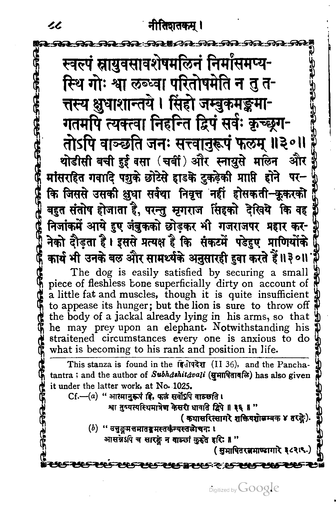 |
svalpa-snāyu-vasāvaśeṣa-malinaṃ nirmāṃsam apy asthi goḥ
śvā labdhvā paritoṣam eti na tu tat tasya kṣudhā-śāntaye |
siṃho jambukam aṅkam āgatam api tyaktvā nihanti dvipaṃ
sarvaḥ kṛcchra-gato 'pi vāñchanti janaḥ sattvānurūpaṃ phalam || BharSt_1.30 ||
|
|
31 |
|
lāṅgūla-cālanam adhaś-caraṇāvapātaṃ
bhūmau nipatya vadanodara-darśanaṃ ca |
śvā piṇḍadasya kurute gaja-puṅgavas tu
dhīraṃ vilokayati cāṭu-śataiś ca bhuṅkte || BharSt_1.31 ||
|
DIGNITY
The dog will roll, and wag his tail, and fawn,
Show mouth and belly, just to get some meat;
The majestic elephant gazes gravely on;
Till coaxed a hundred times, he will not eat.
|
|
32 |
|
parivartini saṃsāre
mṛtaḥ ko vā na jāyate |
sa jāto yena jātena
yāti vaṃśaḥ samunnatim || BharSt_1.32 ||
|
All men alike, birth after birth,
Enter upon a life on earth;
But he is born indeed, whose house
Gains glory from his sterling worth.
|
|
33 |
|
kusuma-stavakasyeva
dvayī vṛttir manasvinaḥ |
mūrdhni vā sarva-lokasya
śīryate vana eva vā || BharSt_1.33 ||
|
ONE FATE OF TWO
One fate of two for the jasmine flower,
The same for the wise and good;
To shine at the head of all the world,
Or to wither in the wood.
|
|
34 |
|
santy anye 'pi bṛhaspati-prabhṛtayaḥ sambhāvitāḥ pañcaṣās
tān praty eṣa viśeṣa-vikrama-rucī rāhur na vairāyate |
dvāv eva grasate divākara-niśā-prāṇeśvarau bhāskarau
bhrātaḥ parvaṇi paśya dānava-patiḥ śīrṣāvaśeṣākṛtiḥ || BharSt_1.34 ||
|
|
35 |
|
vahati bhuvana-śreṇiṃ śeṣaḥ phaṇāphalaka-sthitāṃ
kamaṭha-patinā madhye-pṛṣṭhaṃ sadā sa ca dhāryate |
tam api kurute kroḍādhīnaṃ payodhir anādarād
ahaha mahatāṃ niḥsīmānaś caritra-vibhūtayaḥ || BharSt_1.35 ||
|
|
36 |
|
varaṃ pakṣa-cchedaḥ samadamaghavan-mukta-kuliśaprahārair
udgacchad-bahula-dahanodgāra-gurubhiḥ |
tuṣārādreḥ sūnor ahaha pitari kleśa-vivaśe
na cāsau sampātaḥ payasi payasāṃ patyur ucitaḥ || BharSt_1.36 ||
|
|
37 |
|
yad acetano 'pi pādaiḥ
spṛṣṭaḥ prajvalati saviturinakāntaḥ |
tattejasvī puruṣaḥ
parakṛtavikṛtiḥ kathaṃ sahate ||
|
 |
38 |
|
siṃhaḥ śiśur api nipatati
mada-malina-kapola-bhittiṣu gajeṣu |
prakṛtir iyaṃ sattvavatāṃ
na khalu vayas tejaso hetuḥ || BharSt_1.37 ||
|
|
39 |
|
jātir yātu rasātalaṃ guṇa-gaṇais tatrāpy adho gamyatāṃ
śīlaṃ śaila-taṭāt patatv abhijanaḥ sandahyatāṃ vahninā |
śaurye vairiṇi vajram āśu nipatatv artho 'stu naḥ kevalaṃ
yenaikena vinā guṇas tṛṇa-lava-prāyāḥ samastā ime || BharSt_1.38 ||
|
|
|
|
dhanam arjaya kākutstha
dhana-mūlam idaṃ jagat |
antaraṃ nābhijānāmi
nirdhanasya mṛtasya ca || BharSt_1.39 ||
|
|
40 |
|
tānīndriyāṇy avikalāni tad eva nāma
sā buddhir apratihatā vacanaṃ tad eva |
arthoṣmaṇā virahitaḥ puruṣaḥ kṣaṇena
so 'py anya eva bhavatīti vicitram etat || BharSt_1.40 ||
|
THE POWER OF MONEY
His powers are still the same, his actions too,
His mind is quite as keen, his speech as true;
Yet he has undergone a wondrous change—
He lost his money. Do you think it strange?
|
|
41 |
|
yasyāsti vittaṃ sa naraḥ kulīnaḥ
sa paṇḍitaḥ sa śrutavān guṇajñaḥ |
sa eva vaktā sa ca darśanīyaḥ
sarve guṇāḥ kāñcanam āśrayanti || BharSt_1.41 ||
|
The rich man is of noble birth,
Has learning, sense, and sterling worth;
Is eloquent, and beauty's mould—
For every virtue clings to gold.
|
|
42 |
|
daurmantryān nṛpatir vinaśyati yatiḥ saṅgāt suto lālanāt
vipro 'nadhyayanāt kulaṃ kutanayāc chīlaṃ khalopāsanāt |
hrīr madyād anavekṣaṇād api kṛṣiḥ snehaḥ pravāsāśrayān
maitrī cāpraṇayāt samṛddhir anayāt tyāga-pramādād dhanam || BharSt_1.42 ||
|
|
43 |
|
dānaṃ bhogo nāśas
tisro gatayo bhavanti vittasya |
yo na dadāti na bhuṅkte
tasya tṛtīyā gatir bhavati || BharSt_1.43 ||
|
|
44 |
|
maṇiḥ śāṇollīḍhaḥ samara-vijayī heti-dalito
mada-kṣīṇo nāgaḥ śaradi saritaḥ śyāna-pulināḥ |
kalā-śeṣaś candraḥ surata-mṛditā bāla-vanitā
tan-nimnā śobhante galita-vibhavāś cārthiṣu narāḥ || BharSt_1.44 ||
|
|
45 |
|
parikṣīṇaḥ kaścit spṛhayati yavānāṃ prasṛtaye
sa paścāt sampūrṇaḥ kalayati dharitrīṃ tṛṇa-samām |
ataś cānaikāntyād guru-laghutayā 'rtheṣu dhaninām
avasthā vastūni prathayati ca saṅkocayati ca || BharSt_1.45 ||
|
|
46 |
|
rājan dudhukṣasi yadi kṣiti-dhenum etāṃ
tenādya vatsam iva lokam amuṃ puṣāṇa
tasmiṃś ca samyag aniśaṃ paripoṣyamāṇe
nānā-phalaiḥ phalati kalpalateva bhūmiḥ || BharSt_1.46 ||
|
|
47 |
|
satyānṛtā ca paruṣā priya-vādinī ca
hiṃsrā dayālur api cārthaparā vadānyā |
nitya-vyayā pracura-nitya-dhanāgamā ca
vārāṅganeva nṛpa-nītir aneka-rūpā || BharSt_1.47 ||
|
|
48 |
|
ājñā kīrtiḥ pālanaṃ brāhmaṇānāṃ
dānaṃ bhogo mitra-saṃrakṣaṇaṃ ca
yeṣām ete ṣaḍguṇā na pravṛttāḥ
ko 'rthas teṣāṃ pārthivopāśrayeṇa || BharSt_1.48 ||
|
|
49 |
|
yad dhātrā nija-bhāla-paṭṭa-likhitaṃ stokaṃ mahad vā dhanaṃ
tat prāpnoti marusthale 'pi nitarāṃ merau tato nādhikam |
tad dhīro bhava vittavatsu kṛpaṇāṃ vṛttiṃ vṛthā sā kṛthāḥ
kūpe paśya payonidhāv api ghaṭo gṛhṇāti tulyaṃ jalam || BharSt_1.49 ||
|
THE DIVINE DECREE
Thy wise creator wrote upon thy brow,
When thou wast born, what wealth should once be thine;
The sum was great perhaps, or small; yet now
Thy fate is fixed, and sure the law divine.
For if thou dwell within the desert's bound,
Thou shalt have nothing less than his decree;
Nor shall a single penny more be found,
Although the golden mount thy dwelling be.
Ah, then be brave and play the manly part,
Nor be so fond to humble thy proud heart
And fawn before the rich with cringing art.
For see! A jar that in the ocean fell
Holds no more water in its little shell
Than when you lowered it in the meanest well.
|
|
50 |
|
tvam eva cātakādhāro
'sīti keṣāṃ na gocaraḥ |
kim ambhoda-varāsmākaṃ
kārpaṇyoktaṃ pratīkṣase || BharSt_1.50 ||
|
|
51 |
|
re re cātaka sāvadhāna-manasā mitra kṣaṇaṃ śrūyatām
ambhodā bahavo vasanti gagane sarve 'pi naitādṛśāḥ |
kecid vṛṣṭibhir ārdrayanti vasudhāṃ garjanti kecid vṛthā
yaṃ yaṃ paśyasi tasya tasya purato mā brūhi dīnaṃ vacaḥ || BharSt_1.51 ||
|
|
52 |
|
akaruṇatvam akāraṇa-vigrahaḥ
paradhane parayoṣiti ca spṛhā |
sujana-bandhujaneṣv asahiṣṇutā
prakṛti-siddham idaṃ hi durātmanām || BharSt_1.52 ||
|
|
53 |
|
durjanaḥ parihartavyo
vidyayā 'lakṛto 'pi san |
maṇinā bhūṣitaḥ sarpaḥ
kim asau na bhayaṅkaraḥ || BharSt_1.53 ||
|
|
54 |
|
jāḍyaṃ hrīmati gaṇyate vrata-rucau dambhaḥ śucau kaitavaṃ
śūre nirghṛṇatā munau vimatitā dainyaṃ priyālāpini |
tejasviny avaliptatā mukharatā vaktary aśaktiḥ sthire
tat ko nāma guṇo bhavet sa guṇināṃ yo durjanair nāṅkitaḥ || BharSt_1.54 ||
|
|
55 |
|
lobhaś ced aguṇena kiṃ piśunatā yady asti kiṃ pātakaiḥ
satyaṃ cet tapasā ca kiṃ śuci mano yady asti tīrthena kim |
saujanyaṃ yadi kiṃ guṇaiḥ sumahimā yady asti kiṃ maṇḍanaiḥ
sad-vidyā yadi kiṃ dhanair apayaśo yady asti kiṃ mṛtyunā || BharSt_1.55 ||
|
|
56 |
 |
śaśī divasa-dhūsaro galita-yauvanā kāminī
saro vigata-vārijaṃ mukham anakṣaraṃ svākṛteḥ |
prabhur dhana-parāyaṇaḥ satata-durgataḥ sajjano
nṛpāṅgaṇa-gataḥ khalo manasi sapta śalyāni me || BharSt_1.56 ||
|
SEVEN ARROWS
Seven arrows pierce my heart:
The moonbeams that by day depart;
The maid whose youthful beauty flies;
The pool wherein the lotus dies;
The handsome man whose lips are dumb
The rich man, miserly and glum;
The good man sunk in suffering;
The rogue in favor with the king.
|
|
57 |
|
na kaścic caṇḍa-kopānām
ātmīyo nāma bhūbhujām |
hotāram api juhvānaṃ
spṛṣṭo vahati pāvakaḥ || BharSt_1.57 ||
|
THE ANGER OF THE KING
None from the anger of the king
May be released;
The fire consumes the offering
And burns the priest.
|
|
58 |
|
maunomūkaḥ pravacana-paṭur bāṭulo jalpako vā
dhṛṣṭaḥ pārśve vasati ca sadā dūrataś cāpragalbhaḥ |
kṣāntyā bhīrur yadi na sahate prāyaśo nābhijātaḥ
sevādharmaḥ parama-gahano yoginām apy agamyaḥ || BharSt_1.58 ||
|
|
59 |
|
udbhāsitākhila-khalasya viśṛṅkhalasya
prāg-jāta-vistṛta-nijādhama-karma-vṛtteḥ |
daivād avāpta-vibhavasya guṇa-dviṣo 'sya
nīcasya gocara-gataiḥ sukham āpyate || BharSt_1.59 ||
|
|
60 |
|
ārambha-gurvī kṣayiṇī krameṇa
laghvī purā vṛddhimatī ca paścāt |
dinasya pūrvārdha-parārdha-bhinnā
chāyeva maitrī khala-saj-janānām || BharSt_1.60 ||
|
TWO KINDS OF FRIENDSHIP
The friendship of the rogue or saint,
Like shade at dawn or shade at noon,
Starts large and slowly grows more faint,
Or starting faint, grows larger soon.
|
|
61 |
|
mṛga-mīna-sajjanānāṃ tṛṇa-jala-santoṣa-vihita-vṛttīnām |
lubdhaka-dhīvara-piśunā niṣkāraṇa-vairiṇo jagati || BharSt_1.61 ||
|
WHY?
The deer, the fish, the good man hunger
For grass, for water, for content;
Yet hunter, fisher, scandalmonger
Pursue each harmless innocent.
|
|
62 |
|
vāñchā sajjana-saṅgame para-guṇe prītir gurau namratā
vidyāyāṃ vyasanaṃ sva-yoṣiti ratir lokāpavādād bhayam |
bhaktiḥ śūlini śaktir ātma-damane saṃsarga-muktiḥ khale
yeṣv ete nivasanti nirmala-guṇās tebhyo narebhyo namaḥ || BharSt_1.62 ||
|
|
63 |
|
vipadi dhairyam athābhyudaye kṣamā
sadasi vākya-paṭutā yudhi vikramaḥ |
yaśasi cābhirucir vyasanaṃ śrutau
prakṛti-siddham idaṃ hi mahātmanām || BharSt_1.63 ||
|
|
64 |
|
pradānaṃ pracchannaṃ gṛham upagate sambhrama-vidhiḥ
priyaṃ kṛtvā maunaṃ sadasi kathanaṃ cāpy upakṛteḥ |
anutseko lakṣmyām anabhibhava-gandhāḥ para-kathāḥ
satāṃ kenoddiṣṭaṃ viṣamam asidhārā-vratam idam || BharSt_1.64 ||
|
|
65 |
|
kare ślāghyas tyāgaḥ śirasi guru-pāda-praṇayitā
mukhe satyā vāṇī vijayi bhujayor vīryam atulam |
hṛdi svacchā vṛttiḥ śrutim adhigataṃ ca śravaṇayor
vināpy aiśvaryeṇa prakṛti-mahatāṃ maṇḍanam idam || BharSt_1.65 ||
|
|
66 |
|
sampatsu mahatāṃ cittaṃ bhavaty utpala-komalam |
āpatsu ca mahāśailaśilā- saṅghāta-karkaśam || BharSt_1.66 ||
|
A noble soul, in days of power,
Is tender as a lotus-flower:
But when it meets misfortune's shock,
Grows hard as Himalayan rock.
|
|
67 |
|
santaptāyasi saṃsthitasya payaso nāmāpi na jñāyate
muktākāratayā tad eva nalinī-patra-sthitaṃ rājate |
svātyāṃ sāgara-śukti-madhya-patitaṃ tan-mauktikaṃ jāyate
prāyeṇādhama-madhyamottama-guṇaḥ saṃsargato jāyate || BharSt_1.67 ||
|
|
68 |
|
prīṇāti yaḥ sucaritaiḥ pitaraṃ sa putro
yad bhartur eva hitam icchati tat kalatram |
tan mitram āpadi sukhe ca sama-kriyaṃ yad
etat trayaṃ jagati puṇya-kṛto labhante || BharSt_1.68 ||
|
|
69 |
|
eko devaḥ keśavo vā śivo vā
hy ekaṃ mitraṃ bhūpatir vā yatir vā |
eko vāsaḥ pattane vā vane vā
hy ekā bhāryā sundarī vā darī vā || BharSt_1.69 ||
|
ALL OR NOTHING
Vishnu or Shiva—but one god I crave;
One friend—a lordly king or hermit good;
One home—a city or a lonely wood;
One love—a beauty or a desert cave.
|
|
70 |
|
namratvenonnamantaḥ para-guṇa-kathanaiḥ svān guṇān khyāpayantaḥ
svārthān sampādayanto vitata-pṛthutarārambha-yatnāḥ parārthe |
kṣāntyaivākṣepa-rukṣākṣara-mukhara-mukhān durjanān dūṣayantaḥ
santaḥ sāścarya-caryā jagati bahu-matāḥ kasya nābhyarcanīyāḥ || BharSt_1.70 ||
|
|
71 |
|
bhavanti namrās taravaḥ phalodgamair
navāmbubhir dūrāvalambino ghanāḥ |
anuddhatāḥ sat-puruṣāḥ samṛddhibhiḥ
svabhāva eṣa paropakāriṇām || BharSt_1.71 ||
|
|
72 |
|
śrotraṃ śrutenaiva na kuṇḍalena
dānena pāṇir na tu kaṅkaṇena |
vibhāti kāyaḥ karuṇa-parāṇāṃ
paropakārair na tu candanena || BharSt_1.72 ||
|
|
73 |
|
pāpān nivārayati yojayate hitāya
guhyaṃ nigūhati guṇān prakaṭīkaroti |
āpad-gataṃ ca na jahāti dadāti kāle
san-mitra-lakṣaṇam idaṃ pravadanti santaḥ || BharSt_1.73 ||
|
|
74 |
|
padmākaraṃ dinakaro vikacīkaroti
camdrp volāsayati kairava-cakravālam |
nābhyarthito jaladharo 'pi jalaṃ dadāti
santaḥ svayaṃ parahite vihitābhiyogāḥ || BharSt_1.74 ||
|
|
75 |
 |
eke sat-puruṣāḥ parārtha-ghaṭakāḥ svārthaṃ parityajanti ye
sāmānyās tu parārtham udyama-bhṛtaḥ svārthāvirodhena ye |
te 'mī mānuṣa-rākṣasāḥ parahitaṃ svārthāya nighnanti ye
ye tu ghnanti nirarthakaṃ parahitaṃ te ke na jānīmahe || BharSt_1.75 ||
|
|
76 |
|
kṣīreṇātmagatodakāya hi guṇā dattā purā te 'khilā
kṣīrottāpam avekṣya tena payasā svātmā kṛśānau hutaḥ |
gantuṃ pāvakam unmanas tad abhavad dṛṣṭvā tu mitrāpadaṃ
yuktaṃ tena jalena śāmyati satāṃ maitrī punas tv īdṛśī || BharSt_1.76 ||
|
|
77 |
|
itaḥ svapiti keśavaḥ kulam itas tadīya-dviṣām
itaś ca śaraṇārthināṃ śikhariṇāṃ gaṇāḥ śerate |
ito 'pi baḍavānalaḥ saha samasta-saṃvartakaiṛ
aho vitatam ūrjitaṃ bhara-sahaṃ sindhor vapuḥ || BharSt_1.77 ||
|
|
78 |
|
tṛṣṇāṃ chindhi bhaja kṣamāṃ jahi madaṃ pāpe ratiṃ mā kṛthāḥ
satyaṃ brūhy anuyāhi sādhu-padavīṃ sevasva vidvaj-janam |
mānyān mānaya vidviṣo 'py anunaya prakhyāpaya praśrayaṃ
kīrtiṃ pālaya duḥkhite kuru dayām etat satāṃ ceṣṭitam || BharSt_1.78 ||
|
|
79 |
|
manasi vacasi kāye puṇya-pīyūṣa-pūrṇās
tribhuvanam upakāra-śreṇibhiḥ prīṇayantaḥ |
para-guṇa-paramāṇūn parvatīkṛtya nityaṃ
nija-hṛdi vikasantaḥ santa santaḥ kiyantaḥ || BharSt_1.79 ||
|
THE GOOD ARE RARE
Through thoughts and words and deeds their virtues flow
To all the world their kindness brings delight;
They make a mote of good in others show
Like a great mountain; for their hearts are bright,
And brighten all they touch with their own worth:
How many such are to be found on earth?
|
|
80 |
|
kiṃ tena hema-giriṇā rajatādriṇā vā
yatrāśritāś ca taravas taravas ta eva |
manyāmahe malayam eva yad-āśrayeṇa
kaṅkola-nimba-kaṭujā api candanāḥ syuḥ || BharSt_1.80 ||
|
|
81 |
|
ratnair mahārhais tutuṣur na devā
na bhejire bhīma-viṣeṇa bhītim |
sudhāṃ vinā na parayur virāmaṃ
na niścitārthād viramanti dhīrāḥ || BharSt_1.81 ||
|
|
82 |
|
kvacit pṛthvīśayyaḥ kvacid api ca paraṅka-śayanaḥ
kvacic chākāhāraḥ kvacid api ca śālyodana-ruciḥ |
kvacit kanthādhārī kvacid api ca divyāmbaradharo
manasvī kāryārthī na gaṇayati duḥkhaṃ na ca sukham || BharSt_1.82 ||
|
|
83 |
|
aiśvaryasya vibhūṣaṇaṃ sujanatā śauryasya vāk-saṃyamo
jñānasyopaśamaḥ śrutasya vinayo vittasya pātre vyayaḥ |
akrodhas tapasaḥ kṣamā prabhavitur dharmasya nirvājatā
sarveṣām api sarva-kāraṇam idaṃ śīlaṃ paraṃ bhūṣaṇam || BharSt_1.83 ||
|
 |
84 |
 |
nindantu nīti-nipuṇā yadi vā stuvantu
lakṣmīḥ samāviśatu gacchatu vā yatheṣṭham |
adyaiva vā maraṇam astu yugāntare vā
nyāyyāt pathaḥ pravicalanti padaṃ na dhīrāḥ || BharSt_1.84 ||
|
|
85 |
|
bhagnāśasya karaṇḍa-piṇḍita-tanor mlānendriyasya kṣudhā
kṛtvākhur vivaraṃ svayaṃ nipatito naktaṃ mukhe bhoginaḥ |
tṛptas tat-piśitena satvaram asau tenaiva yātaḥ yathā
lokāḥ paśyata daivam eva hi nṛṇāṃ vṛddhau kṣaye kāraṇam || BharSt_1.85 ||
|
| 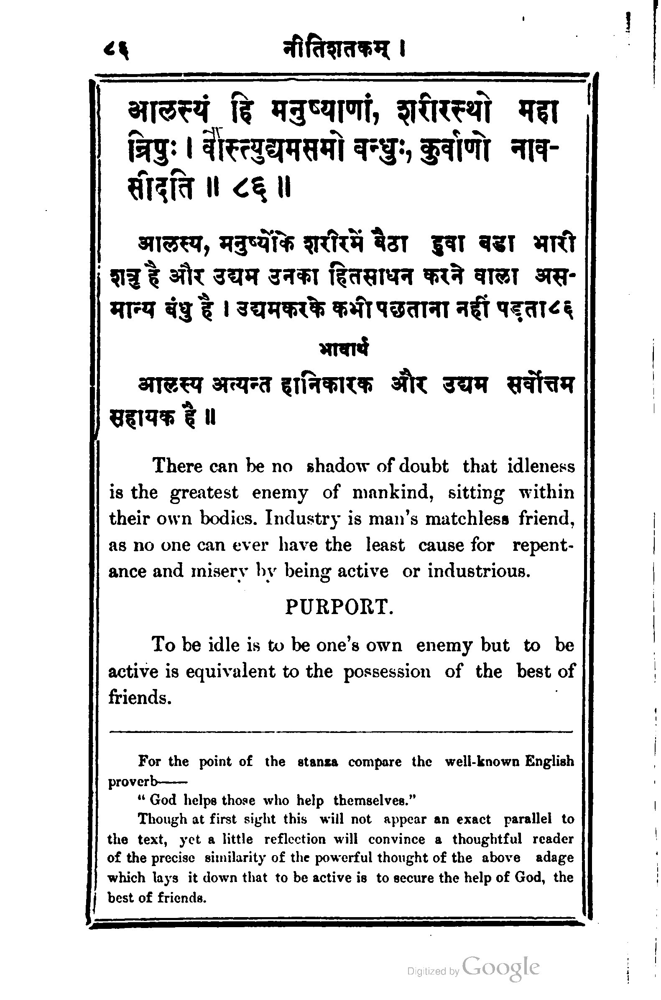 |
86 |
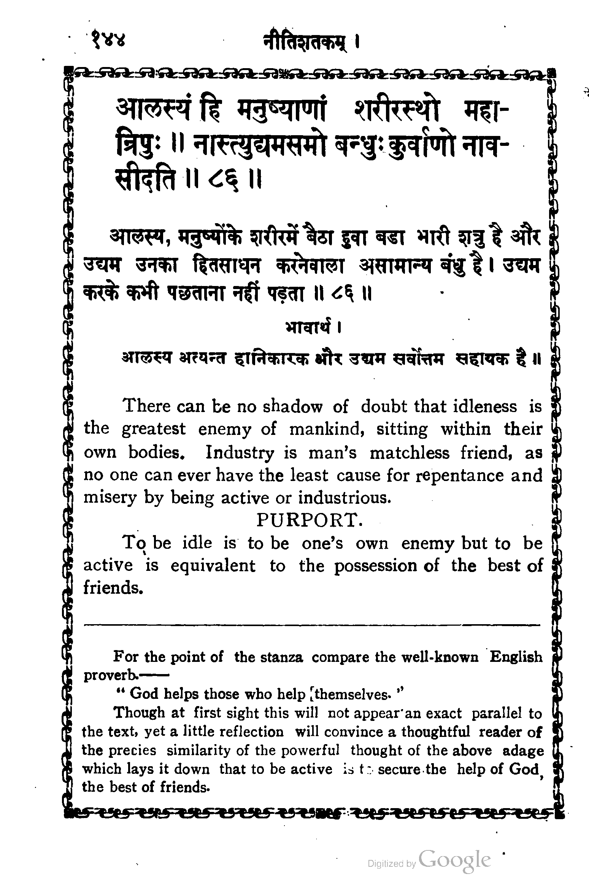 |
ālasyaṃ hi manuṣyāṇāṃ
śarīrastho mahān ripuḥ |
nāsty udyama-samo bandhuḥ
kurvāṇo nāvasīdati || BharSt_1.86 ||
|
|
87 |
|
chinno 'pi rohati tar kṣīṇo 'py upacīyate punaś candraḥ |
iti vimṛśantaḥ santaḥ santapyante na duḥkheṣu || BharSt_1.87 ||
|
|
88 |
|
netā yasya bṛhaspatiḥ praharaṇaṃ vajraṃ surāḥ sainikāḥ
svargo durgam anugrahaḥ kila harer airāvato vāraṇaḥ |
ity aiśvarya-balānvito 'pi balabhid bhagnaḥ paraiḥ saṅgare
tad vyaktaṃ nanu daivam eva śaraṇaṃ dhig dhig vṛthā pauruṣam || BharSt_1.88 ||
|
|
89 |
|
karmāyattaṃ phalaṃ puṃsāṃ
buddhiḥ karmānusāriṇī |
tathāpi sudhiyā bhāvyaṃ
suvicāryaiva kurvatā || BharSt_1.89 ||
|
|
90 |
|
khalv āto divaseśvarasya kiraṇaiḥ santāḍito mastake
vāñchan deśam anātapaṃ vidhi-vaśāt tālasya mūlaṃ gataḥ |
tatrāpy asya mahāphalena patatā bhagnaṃ saśabdaṃ śiraḥ
prāyo gacchati yatra bhāgya-rahitas tatraiva yānty āpadaḥ || BharSt_1.90 ||
|
THE UNLUCKY MAN
A bald man once, whose hairless pate
Felt inconveniently hot,
Fled to a cocoa-tree at noon-
He hoped to find a shady spot.
And then a big nut fell, and crack!
The poor, hald head was split in two.
Misfortunes almost always find
The man whom evil fates pursue.
|
|
91 |
|
ravi-niśākarayor graha-pīḍanaṃ
gaja-bhujaṅgamayor api bandhanam |
matimatāṃ ca vilokya daridratāṃ
vidhir aho balavān iti me matiḥ || BharSt_1.91 ||
|
HOW HARD FATE GRIPS
The snake and elephant are caged;
The moon and sun must meet eclipse;
The prudent are in strife engaged
With poverty. How hard fate grips!
|
|
92 |
 |
sṛjati tāvad aśeṣa-guṇakaraṃ
puruṣa-ratnam alaṅkaraṇaṃ bhuvaḥ |
tad api tat-kṣaṇa-bhaṅgi karoti
ced ahaha kaṣṭam apaṇḍitatā vidheḥ || BharSt_1.92 ||
|
|
93 |
|
patraṃ naiva yadā karīra-viṭape doṣo vasantasya kim
nolūko 'py avaokate yadi divā sūryasya kiṃ dūṣaṇam |
dhārā naiva patanti cātaka-mukhe meghasya kiṃ dūṣaṇam
yat pūrvaṃ vidhinā lalāṭa-likhitaṃ tan mārjituṃ kaḥ kṣamaḥ || BharSt_1.93 ||
|
THE LINES OF FATE
If thorn-plants in the desert leafless be,
The spring is not to blame.
If owls in broadest daylight cannot see,
The sun should feel no shame.
If in the plover's bill no raindrops fall,
'Twere wrong to blame the cloud.
The lines that fate has written once for all,
Are never disallowed.
|
|
94 |
|
namasyāmo devān nanu hatavidhes te 'pi vaśagā
vidhir vandyaḥ so 'pi pratiniyata-karmaika-phaladaḥ |
phalaṃ karmāyattaṃ yadi kim amaraiḥ kiṃ ca vidhinā
namas tat-karmabhyo vidhir api na yebhyaḥ prabhavati || BharSt_1.94 ||
|
|
95 |
|
brahmā yena kulālavan niyamito brahmāḍa-bhāṇḍodare
viṣṇur yena daśāvatāra-gahane kṣipto mahā-saṅkaṭe |
rudro yena kapāla-pāṇi-puṭake bhikṣāṭanaṃ kāritaḥ
sūryo bhrāmyati nityam eva gagane tasmai namaḥ karmaṇe || BharSt_1.95 ||
|
|
96 |
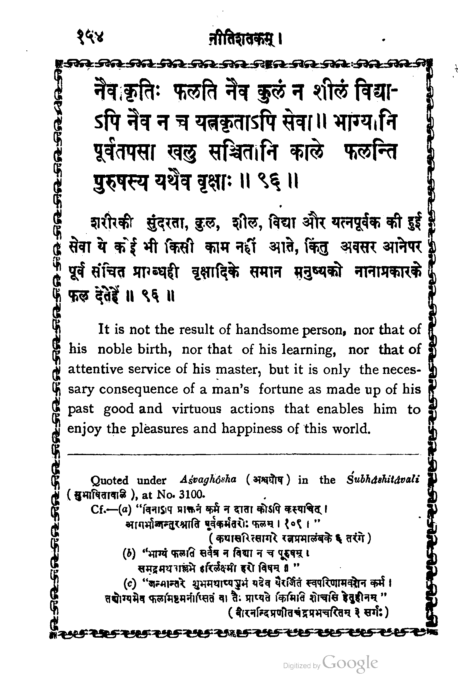 |
naivākṛtiḥ phalati naivaa kulaṃ na śīlaṃ
vidyāpi naiva na ca yatna-kṛtāpi sevā |
bhāgyāni pūrva-tapasā khalu sañcitāni
kāle phalanti puruṣasya yathaiva vṛkṣāḥ || BharSt_1.96 ||
|
|
97 |
|
vane raṇe śatru-jalāgni-madhye
mahārṇave parvata-mastake vā |
suptaṃ pramattaṃ viṣama-sthitaṃ vā
rakṣanti puṇyāni purākṛtāni || BharSt_1.97 ||
|
|
98 |
|
yā sādhūṃś ca khalān karoti viduṣo mūrkhān hitān dveṣiṇaḥ
pratyakṣaṃ kurute parīkṣam amṛtaṃ hālāhalaṃ tat-kṣaṇāt |
tām ārādhaya sat-kriyāṃ bhagavatīṃ bhoktuṃ phalaṃ vāñchitaṃ
he sādho vyasanair guṇeṣu vipuleṣv āsthāṃ vṛthā mā kṛthāḥ || BharSt_1.98 ||
|
|
99 |
|
guṇavad aguṇavad vā kurvatā kārya-jātaṃ
pariṇatir avadhāryā yatnataḥ paṇḍitena |
atirabhasa-kṛtānāṃ karmaṇām āvipatter
bhavati hṛdaya-dāhī śalya-tulyo vipākaḥ || BharSt_1.99 ||
|
|
100 |
|
sthālyāṃ vaidūryamayyāṃ pacati tilakaṇāṃś candanair indhanaughaiḥ
sauvarṇair lāṅgalāgrair vilikhati vasudhām arka-mūlasya hetoḥ |
kṛtvā karpūra-khaṇḍān vṛttim iha kurute kodravāṇāṃ samantāt
prāpyemāṃ karma-bhūmiṃ na carati manujo yas topa manda-bhāgyaḥ || BharSt_1.100 ||
|
EXTRAVAGANCE
They cook their grain in beryl kettles
With fuel of sandal-shoots,
They plough with ploughs of precious metals
To get the yercum-roots,
They make a hedge of camphor wood
About the humblest corn,
Unhappy fools! who are not good
On earth where they were born.
|
|
101 |
|
majjatv ambhasi yātu meru-śikharaṃ śatruṃ jayatv āhave
vāṇijyaṃ kṛṣi-sevane ca sakalā vidyāḥ kalāḥ śikṣatām |
ākāśaṃ vipulaṃ prayātu khagavat kṛtvā prayatnaṃ paraṃ
nābhāvyaṃ bhavatīha karma-vaśato bhāvyasya nāśaḥ kutaḥ || BharSt_1.101 ||
|
|
102 |
|
bhīmaṃ vanaṃ bhavati tasya puraṃ pradhānaṃ
sarvo janaḥ svajanatām upayāti tasya |
kṛtsnā ca bhūr bhavati sannidhi-ratna-pūrṇā
yasyāsti pūrva-sukṛtaṃ vipulaṃ narasya || BharSt_1.102 ||
|
|
103 |
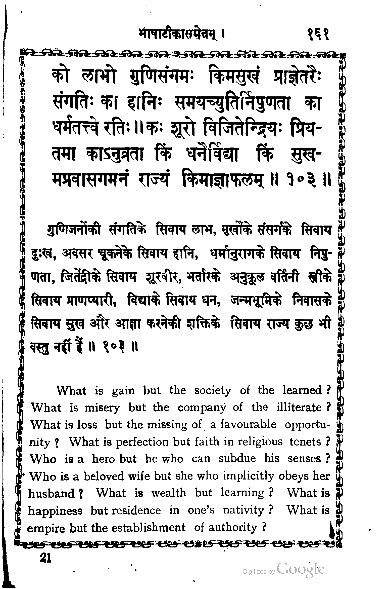 |
ko lābho guṇisaṅgamaḥ kim asukhaṃ prājñetaraiḥ saṅgatiḥ
kā hāniḥ samaya-cyutir nipuṇatā kā dharma-tattve ratiḥ |
kaḥ śūro vijitendriyaḥ priyatamā kā 'nuvratā kiṃ dhanaṃ
vidyā kiṃ sukham apravāsa-gamanaṃ rājyaṃ kim ājñā-phalam || BharSt_1.103 ||
|
|
104 |
|
pātito 'pi karāghātair utpatatyeva kandukaḥ |
prāyeṇa sādhu-vṛttānām asthāyinyo vipattayaḥ ||
|
|
105 |
|
apriya-vacana-daridraiḥ priya-vacana-dhanāḍhyaiḥ sva-dāra-parituṣṭaiḥ |
para-parivāda-nivṛttaiḥ kvacit kvacin maṇḍitā vasudhā || BharSt_1.104 ||
|
|
106 |
|
kadarthitasyāpi hi dhairya-vṛtter
na śakyate dhairya-guṇaḥ pramārṣṭum |
adhomukhasyāpi kṛtasya vahner
nādhaḥ śikhā yāti kadācid eva || BharSt_1.105 ||
|
Although the strong man be disdained,
His purpose never bends:
As when a lighted torch is held
Flame-down, the flame ascends.
|
|
107 |
 |
kāntākaṭākṣa-viśikhā na lunanti yasya
cittaṃ na nirdahati kipa-kṛśānutāpaḥ |
karṣanti bhūri-viṣayāś ca na lobha-pāśair
loka-trayaṃ jayati kṛtsnam idaṃ sa dhīraḥ || BharSt_1.106 ||
|
|
108 |
 |
ekenāpi hi śūreṇa
pādākrāntaṃ mahītalam |
kriyate bhāskareṇaiva
sphāra-sphurita-tejasā || BharSt_1.107 ||
|
|
109 |
|
vahnis tasya jalāyate jala-nidhiḥ kulyāyate tat-kṣaṇān
meruḥ svalpa-śilāyate mṛgapatiḥ sadyaḥ kuraṅgāyate |
vyālo mālya-guṇāyate viṣa-rasaḥ pīyūṣa-varṣāyate
yasyāṅge 'khila-loka-vallabhatamaṃ śīlaṃ samunmīlati || BharSt_1.108 ||
|
|
110 |
|
lajjā-guṇaugha-jananīṃ jananīm iva svām
atyanta-śuddha-hṛdayām anuvartamānām |
tejasvinaḥ sukham asūn api santyajanati
satya-vrata-vyasanino na punaḥ pratijñām || BharSt_1.109 ||
|
|
|
|
abhimukhanihatasya satas
tiṣṭhatu tāvaj jayo'thavā svargaḥ |
ubhaya-bala-sādhu-vādaḥ
śravaṇa-sukho 'sau batātyartham ||
|
WHY MEN FIGHT
Perhaps the warrior, smitten by his foe,
Will rise to heaven and leave the world below;
Perhaps the fighting is its own reward;
No god has told us and we do not know.
We only know that the applauding beat
Of eager hands, the joyous shouts that greet
The sturdy fighter from his foes and friends,
Are music in his ears, and very sweet.
|
|
|
|
paricaritavyāḥ santo yadyapi kathayanti na sadupadeśam |
yāstveṣāṃ svairakathāstā eva bhavanti śāstrāṇi ||
|
Hark to the counsel of the good,
Although irrelevant it looks;
Their simple talk is richer food
And wiser than the best of books.
|
|
|
|
yadi nāma daivayogāt jagadasarojaṃ kadācidapi jātam,
avakaranikaraṃ vikirati tatkiṃ kṛkavākuriva haṃsaḥ ? ||
|
NOBILITY
If fate should ever stay the birth
Of every lily on the earth,
Do you suppose that swans would scratch.
Like roosters, in the dunghill patch?
|
|
111 |
 |
|
112 |
|
|
113 |
|
śambhu-svayambhu-harayo hariṇekṣaṇānāṃ
yenākriyanta satataṃ gṛha-kumbha-dāsāḥ |
vācām agocara-caritra-vicitritāya
tasmai namo bhagavate makara-dhvajāya || BharSt_2.1 ||
|
|
114 |
|
smitena bhāvena ca lajjayā bhiyā
parāṇmukhair ardha-kaṭākṣa-vīkṣaṇaiḥ |
vacobhir īrṣyā-kalahena līlayā
samasta-bhāvaiḥ khalu bandhanaṃ striyaḥ || BharSt_2.2 ||
|
|
115 |
 |
bhrū-cāturyāt kuṣcitākṣāḥ kaṭākṣāḥ
snigdhā vāco lajjitāntāś ca hāsāḥ |
līlā-mandaṃ prasthitaṃ ca sthitaṃ ca
strīṇām etad bhūṣaṇaṃ cāyudhaṃ ca || BharSt_2.3 ||
|
WOMAN'S WEAPONS
The skillfully coquettish frown,
Bashfulness choking laughter down,
The love-word seeming free from guile,
The undulating step, the smile—
These things to every woman true,
Are ornaments, and weapons too.
|
|
116 |
|
kvacit sa-bhrū-bhaṅgaiḥ kvacid api ca lajjā-parigataiḥ
kvacid bhūri-trastaiḥ kvacid api ca līlā-vilalitaiḥ |
kumārīṇām etair madana-subhagair netra-valitaiḥ
sphuran-nīlābjānāṃ prakara-parikīrṇā iva diśaḥ || BharSt_2.4 ||
|
WOMEN'S EYES
The world is full of women's eyes,
Defiant, filled with shy surprise,
Demure, a little overfree,
Or simply sparkling roguishly;
It seems a gorgeous lily-bed,
Whichever way I turn my head.
|
|
117 |
 |
vaktraṃ candra-vikāsi paṅkaja-parīhāsa-kṣame locane
varṇaḥ svarṇam apākariṣṇur alinī-jiṣṇuḥ kacānāṃ cayaḥ |
bakṣojāv ibha-kumbha-vibhrama-harau gurvī nitamba-sthalī
vācāṃ hāri ca mārdavaṃ yuvatīṣu svābhāvikaṃ maṇḍanam || BharSt_2.5 ||
|
| 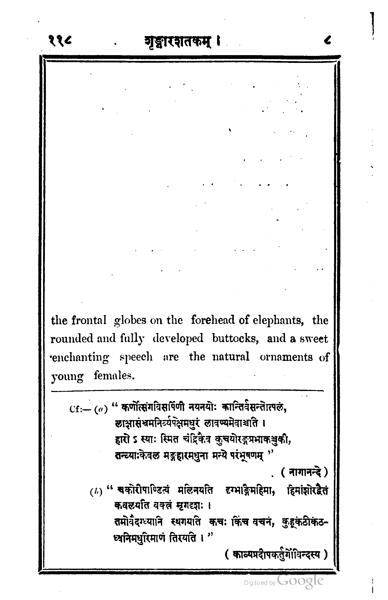 |
118 |
|
|
119 |
|
smita-kiñcin-mugdhaṃ sarala-taralo dṛṣṭi-vibhavaḥ
parispando vācām abhinava-vilāsokti-sarasaḥ |
gatānām ārambhaḥ kisalayita-līlā-parikaraḥ
spṛśantyās tāruṇyaṃ kim iva na hi ramyaṃ mṛgadṛśaḥ || BharSt_2.6 ||
|
YOUNG WOMANHOOD
Half-smiles that brighten on her face,
Innocent, roving glances,
The wealth of budding charms that show
In little steps and dances,
The flow of words that shyly prove
The sweet, new woman-feeling:
Yes, all the fawn-eyed maiden does
Is wondrously appealing.
|
|
120 |
|
draṣṭavyeṣu kim uttamaṃ mṛgadṛśaḥ prema-prasannaṃ mukhaṃ
ghrātaveṣv api kiṃ tad-āsya-pavanaḥ śravyeṣu kiṃ tad-vacaḥ |
kiṃ svādyeṣu tad-oṣṭha-pallava-rasaḥ spṛśyeṣu kiṃ tad-vapur
dhyeyaṃ kiṃ nava-yauvane sahṛdayaiḥ sarvatra tad-vibhramāḥ || BharSt_2.7 ||
|
THE SWEETEST THINGS
The sweetest sight a man may see
Is a maiden's loving face;
The sweetest thing to touch should be
Her body's close embrace;
Her voice should be the sweetest sound;
Her breath, the sweetest scent;
The sweetest taste, the honey found
On lips to kisses lent;
The thought of her is fervent prayer,
Religion's sweetest part;
The charm of her is everywhere
Unto the pure in heart.
|
|
121 |
|
etāś calad-valaya-saṃhati-mekhalotthajhaṅkāra-
nūpura-parājita-rāja-haṃsyaḥ |
kurvanti kasya na mano vivaśaṃ taruṇyo
vitrasta-mugdha-hariṇī-sadṛśaiḥ kaṭākṣaiḥ || BharSt_2.8 ||
|
|
122 |
|
kuṅkuma-paṅka-kalaṅkita-dehā
gaura-payodhara-kampita-hārā |
nūpura-haṃsa-raṇat-padmā
kaṃ na vaśīkurute bhuvi rāmā || BharSt_2.9 ||
|
|
123 |
 |
nūnaṃ hi te kavi-varā viparīta-vāco
ye nityam āhur abalā iti kāminīs tāḥ |
yābhir vilolitara-tāraka-dṛṣṭi-pātaiḥ
śakrādayo 'pi vijitās tv abalāḥ kathaṃ tāḥ || BharSt_2.10 ||
|
THE WEAKER SEX
The classic poets make a great mistake;
Forever of the weaker sex they speak;
When gods are subjugated for the sake
Of starry glances, are the women weak?
|
|
124 |
|
nūnam ājñā-karas tasyāḥ subhruvo makara-dhvajaḥ |
yatas tan-netra-sañcāra-sūciteṣu pravartate || BharSt_2.11 ||
|
THE QUEEN OF LOVE
Surely the love-god is the slave
Of her sweet eyes;
For when they give a hint, the knave
Obedient flies.
|
|
125 |
|
keśāḥ saṃyaminaḥ śruter api paraṃ pāraṃ gate locane
antar-vaktram api svabhāva-śuci-bhīḥ kīrṇaṃ dvijānāṃ gaṇaiḥ |
muktānāṃ satatādhivāsa-rucirau vakṣoja-kumbhāv imāvitthaṃ
tanvi vapuḥ praśāntam api terāgaṃ karoty eva naḥ || BharSt_2.12 ||
|
|
126 |
|
| 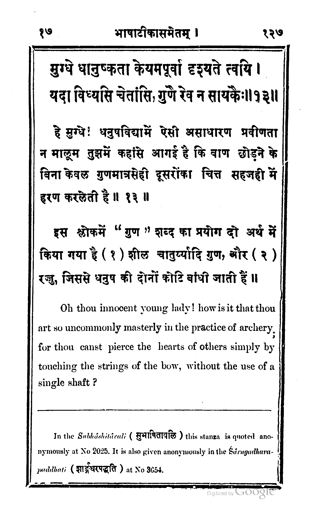 |
127 |
|
mugdhe dhānuṣkatā keyam apūrvā tvayi dṛśyate |
yayā vidhyasi cetāṃsi guṇair eva na sāyakaiḥ || BharSt_2.13 ||
|
|
128 |
|
sati pradīpe saty agnau satsu tārāravīnduṣu |
vinā me mṛga-śāvākṣyā tamo-bhūtam idaṃ jagat || BharSt_2.14 ||
|
GENTLE EYES
Candle, and fire, and star,
Sun, moon, to give me light;
But her dear, gentle eyes are far—
This world is night.
|
| 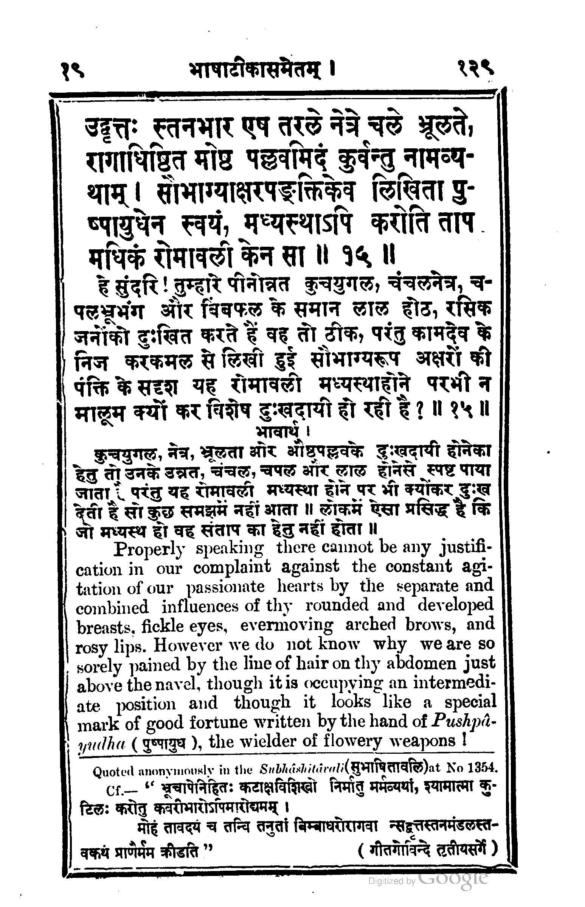 |
129 |
|
udvṛttaḥ stana-bhāra eṣa tarale netre cale bhrū-late
rāgādhiṣṭhitam oṣṭha-pallavam idaṃ kurvantu nāma vyathām |
saubhāgyākṣara-mālikeva likhitā puṣpāyudhena svayaṃ
madhyasthāpi karoti tāpam adhikaṃ romāvaliḥ kena sā || BharSt_2.15 ||
|
|
130 |
|
guruṇā stana-bhāreṇa mukha-candreṇa bhāsvatā |
śanaiś-carābhyāṃ pādābhyāṃ reje grahamayīva sā || BharSt_2.17 ||
|
|
131 |
|
tasyāḥ stanau yadi ghanau jaghanaṃ ca hāri
vaktraṃ ca cāru tava citta kim ākulatvam |
puṇyaṃ kuruṣva yadi teṣu tavāsti vāñchā
puṇyair vinā na hi bhavanti samīhitārthāḥ || BharSt_2.18 ||
|
ALL THESE THINGS SHALL BE ADDED
What though she have a bosom sweet,
A form to beauty wed,
A face in which the graces meet-
She must not turn your head.
Nay, if her charm your fancy haunts,
Then live on virtue's food;
One cannot have the things he wants
Except by being good.
|
|
132 |
 |
mātsaryam utsārya vicārya kāryamāryāḥ
samaryādam idaṃ vadantu |
sevyā nitambāḥ kim u bhūdharāṇāmata
smara-smera-vilāsinīnām || BharSt_2.36 ||
|
|
133 |
|
saṃsāre svapna-sāre pariṇati-tarale dve gatī paṇḍitānāṃ
tattva-jñānāmṛtāmbhaḥ-plava-lalita-dhiyāṃ yātu kālaḥ kathañcit |
no cen mugdhāṅganānāṃ stana-jaghana-ghanābhoga-sambhoginīnāṃ
sthūlopastha-sthalīṣu sthagita-karatala-sparśa-līlodyamānām || BharSt_2.37 ||
|
|
134 |
|
mukhena candra-kāntena mahānīlaiḥ śiroruhaiḥ |
karābhyāṃ padmarāgābhyāṃ reje ratnamayīva sā || BharSt_2.16 ||
|
|
135 |
 |
saṃmohayanti madayanti viḍambayanti
nirbhartsyanti ramayanti viṣādayanti |
etāḥ praviśya sadayaṃ hṛdayaṃ narāṇāṃ
kiṃ nāma vāma-nayanā na samācaranti || BharSt_2.47*1 ||
|
WOMEN'S GLANCES
What will not women's glances do,
When man is moved by pity true
To yield the heart that they pursue?
They fascinate and gladden him,
Bewilder, mock, and madden him,
And at the end they sadden him.
|
|
136 |
|
viśramya viśramya vana-drumāṇāṃ
chāyāsu tanvī vicacāra kācit |
stanottarīyeṇa karoddhṛtena
nivārayantī śaśino mayūkhān || BharSt_2.21 ||
|
Graceful amid the forest shade
Wandered a weary, weary maid;
Alone, by moonbeams sore opprest,
Lifting the garment from her breast.
|
|
137 |
|
adarśane darśana-mātra-kāmā
dṛṣṭvā pariṣvaṅga-sukhaika-lolā |
āliṅgitāyāṃ punar āyatākṣyāmāśāsmahe
vigrahayor abhedam || BharSt_2.22 ||
|
LOVE GROWS BY WHAT IT FEEDS ON
When she is far, I only want to see see her;
When she is seen, I only want to kiss her;
When she is kissed, I never want to flee her;
I know that I could never bear to miss her.
|
 |
138 |
|
mālatī śirasi jṛmbhaṇaṃ mukhe
candanaṃ vapuṣi kuṅkumāvilam |
vakṣasi priyatamā madālasā
svarga eṣa pariśiṣṭa āgamaḥ || BharSt_2.23 ||
|
|
139 |
|
prāṅ mām eti manāg anāgata-rasaṃ jātābhilāṣāṃ tataḥ
savrīḍaṃ tad anu ślathodyamam atha pradhvasta-dhairyaṃ punaḥ |
premārdraṃ spṛhaṇīya-nirbhara-rahaḥ krīḍā-pragalbhaṃ tato
niḥsaṅgāṅga-vikarṣaṇādhika-sukha-ramyaṃ kula-strī-ratam || BharSt_2.24 ||
|
|
140 |
|
urasi nipatitānāṃ srasta-dhammillakānāṃ
mukulita-nayanānāṃ kiñcid-unmīlitānām |
upari surata-kheda-svinna-gaṇḍa-sthalānām
adhara-madhu vadhūnāṃ bhāgyavantaḥ pibanti || BharSt_2.25 ||
|
|
141 |
|
āmīlita-nayanānāṃ yaḥ
surataraso 'nu saṃvidaṃ bhāti |
mithurair mitho 'vadhāritamavitatham
idam eva kāma-nirbarhaṇam || BharSt_2.26 ||
|
|
142 |
 |
idam anucitam akramaś ca puṃsāṃ
yad iha jarāsv api manmathā vikārāḥ |
tad api ca na kṛtaṃ nitambinīnāṃ
stana-patanāvadhi jīvitaṃ rataṃ vā || BharSt_2.27 ||
|
|
143 |
|
etat-kāma-phalo loke yad dvayor eka-cittatā |
anya-citta-kṛte kāme śavayor iva saṅgamaḥ || BharSt_2.35*1 ||
|
ABSENCE AND UNION
Absence is union dear,
When hearts are one;
Union is absence drear.
When love is done.
PERFECT LOVE
Then only is a perfect love,
When hearts harmonious wed;
Love void of harmony must prove
A union of the dead.
|
|
144 |
|
praṇaya-madhurāḥ premodgārā rasāśrayatāṃ gatāḥ
phaṇiti-madhurā mugdha-prāyāḥ prakāśita-sammadāḥ |
prakṛti-subhagā visrambhārdrāḥ smarodaya-dāyinī
rahasi kim api svairālāpā haranti mṛgīdṛśām || BharSt_2.20 ||
|
|
145 |
|
āvāsaḥ kriyatāṃ gaṅge pāpa-hāriṇi vāriṇi |
stana-dvaye taruṇyā vā manohāriṇi hāriṇi || BharSt_2.38 ||
|
HEAVEN ABOVE AND HEAVEN BELOW
Oh, dwell by Ganges' holy wave
Where passion's slave his soul may lave;
Or on the bosom of a girl
Where strings of pearl would charm a churl.
|
|
146 |
|
priyapurato yuvatīnāṃ
tāvat padam ātanoti hṛdi mānaḥ |
bhavati na yāvac candana-
taru-surabhir nirmalaḥ pavanaḥ ||
prathitaḥ praṇayavatīnāṃ
tāvat padam ātanotu hṛdi mānaḥ |
bhavati na yāvac candanataru-
surabhir malaya-pavamānaḥ || BharSt_2.85 ||
|
THE LOVERS' ALLY
Ye maids, exhaust your haughty scorn
On lovers bending low;
For soon the breeze in southland born,
With sandal sweet, will blow.
|
|
147 |
|
parimala-bhṛto vātāḥ śākhā navāṅkura-koṭayo
madhura-vidhurotkaṇṭhā-bhājaḥ priyā pika-pakṣiṇām |
virala-virasa-svedodgārā vadhū-vadanendavaḥ
prasarati madhau dhātryāṃ jāto na kasya guṇodayaḥ || BharSt_2.81 ||
|
|
148 |
|
madhur ayaṃ madhurair api kokilā
kala-ravair malayasya ca vāyubhiḥ |
virahiṇaḥ prahiṇasti śarīriṇo
vipadi hanta sudhāpi viṣāyate || BharSt_2.82 ||
|
SORROWS OF SPRING
When spring comes on the wanderer
From her he loveth far,
With cooing songs of nightingales
And winds from Malabar,
Though sweet the season, sweet the song,
His sorrows are so grim
That even a cup of nectar seems
A poisoned cup to him.
|
|
149 |
|
āvāsaḥ kila-kiñcitasya dayitā-pārśve vilāsālasāḥ
karṇe kokila-kāminī-kala-ravaḥ smero latā-maṇḍapaḥ |
goṣṭhī sat-kavibhiḥ samaṃ katipayair mugdhāḥ sudhāṃśoḥ karāḥ
keṣāṃcit sukhayanti cātra hṛdayaṃ caitre vicitrāḥ kṣapāḥ || BharSt_2.83 ||
|
AN APRIL EVENING
A little lazy loitering
With her you love, in early spring,
Is not a despicable thing—
A little music in your ear
From nightingales that warble near
A smiling bower, is sweet to hear—
A little converse with a few—
Not many—first-rate poets who
Enjoy the moonlight as do you—
An April evening, taken so,
Is not without delights to show—
Believe me! to the few who know.
|
|
150 |
|
pāntha strī-virahānalāhuti-kalām ātanvatī mañjarīmākandeṣu
pikāṅganābhir adhunā sotkaṇṭham ālokyate |
apy ete nava-pāṭalā-parimala-prāg-bhāra-pāṭac-carā
vānti-klānti-vitāna-tānava-kṛtaḥ śrīkhaṇḍa-śailānilāḥ || BharSt_2.84 ||
|
| 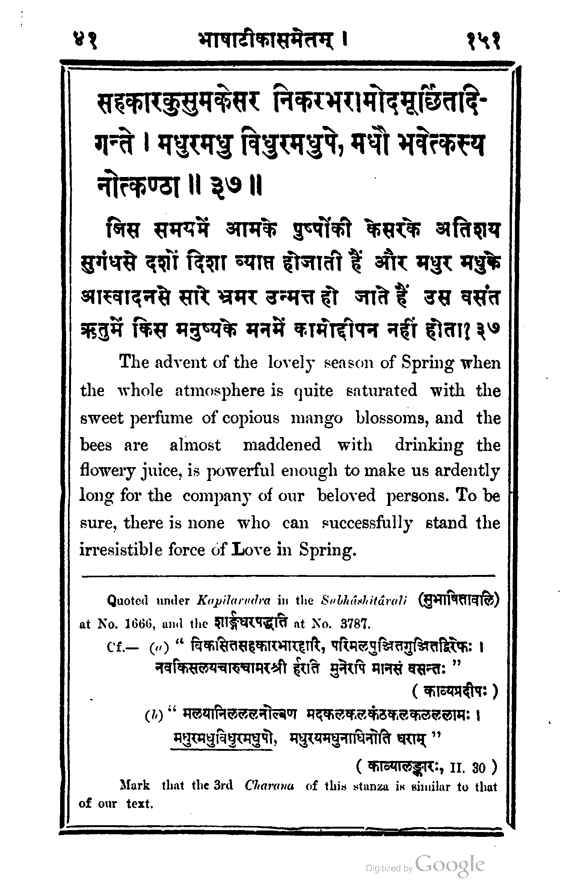 |
151 |
|
sahakāra-kusuma-kesaranikara-
bharāmoda-mūrcchita-dig-ante |
madhura-madhura-vidhura-madhupe
madhau bhavet kasya notkaṇṭhā || BharSt_2.86 ||
|
|
152 |
|
acchāccha-candana-rasārdratarā mṛgākṣyo
dhārā-gṛhāṇi kusumāni ca kaumudī ca |
mando marut sumanasaḥ śuci harmya-pṛṣṭhaṃ
grīṣme madaṃ ca madanaṃ ca vivardhayanti || BharSt_2.87 ||
|
|
153 |
|
srajo hṛdy āmodā vyajana-pavanaś candra-kiraṇāḥ
parāgaḥ kāsāro malayaja-rajaḥ śīdhu viśadam |
śuciḥ saudhotsaṅgaḥ pratanu vasanaṃ paṅkaja-dṛśo
nidāgha-rtāv etad vilasati labhante sukṛtinaḥ || BharSt_2.88 ||
|
|
154 |
|
sudhā-śubhraṃ dhāma sphurad-amala-raśmiḥ śaśadharaḥ
priyā-vaktrāmbhojaṃ malayaja-rajaś cātisurabhiḥ |
srajo hṛdyāmodās tad idam akhilaṃ rāgiṇi jane
karoty antaḥ kṣobhaṃ na tu viṣaya-saṃsarga-vimukhe || BharSt_2.89 ||
|
|
155 |
|
taruṇī-veṣoddīpita-kāmā
vikasaj-jātī-puṣpa-sugandhiḥ |
unnata-pīna-payodhara-bhārā
prāvṛṭ tanute kasya na harṣam || BharSt_2.90 ||
|
|
156 |
|
viyad-upacita-meghaṃ bhūmayaḥ kandalinyo
nava-kuṭaja-kadambāmodino gandhavāhāḥ |
śikhi-kula-kala-kekārāvaramyā vanāntāḥ
sukhinam asukhinaṃ vā sarvam utkaṇṭhayanti || BharSt_2.91 ||
|
|
157 |
|
upari ghanaṃ ghana-paṭalaṃ
tiryag girayo 'pi nartita-mayūrāḥ |
kṣitir api kandala-dhavalā
dṛṣṭiṃ pathikaḥ kva pātayati || BharSt_2.92 ||
|
|
158 |
|
ito vidyud-vallī-vilasitam itaḥ ketaki-taroḥ
sphuran gandhaḥ prodyaj-jalada-ninada-sphūrjitam itaḥ |
itaḥ keki-krīḍā-kala-kala-ravaḥ pakṣmala-dṛśāṃ
kathaṃ yāsyanty ete viraha-divasāḥ sambhṛta-rasāḥ || BharSt_2.93 ||
|
|
159 |
|
asūci-sañcāre tamasi nabhasi prauḍha-jaladadhvani-
prājñaṃmanye patati pṛṣatānāṃ ca nicaye |
idaṃ saudāminyāḥ kanaka-kamanīyaṃ vilasitaṃ
mudaṃ ca mlāniṃ ca prathayati pathi svaira-sudṛśām || BharSt_2.94 ||
|
|
160 |
|
āsāreṇa na harmyataḥ priyatamair yātuṃ bahiḥ śakyate
śītotkampa-nimittam āyata-dṛśā gāḍhaṃ samāliṅgyate |
jātāḥ śīkara-śītalāś ca marutor atyanta-kheda-cchido
dhanyānāṃ bata durdinaṃ sudinatāṃ yāti priyā-saṅgame || BharSt_2.95 ||
|
THE RAINS
And when the rainy days are come,
Your lady-love must stay at home;
She clings to you, a little bold
Because she shivers with the cold;
The breeze is fresh with heaven's spray
And drives her lassitude away:
When happy lovers are together,
The rainy time is fairest weather.
|
|
161 |
|
ardhaṃ suptvā niśāyāḥ sarabhasa-suratāyāsa-sanna-ślathāṅgaprodbhūtāsahya-
tṛṣṇo madhu-mada-nirato harmya-pṛṣṭhe vivikte |
sambhoga-klānta-kāntā-śithila-bhuja-latā-varjitaṃ karkarīto
jyotsnābhinnāccha-dhāraṃ pibati na salilaṃ śāradaṃ manda-puṇyaḥ || BharSt_2.96 ||
|
 |
162 |
|
hemante dadhi-dugdha-sarpir aśanā māñjiṣṭha-vāso-bhṛtaḥ
kāśmīra-drava-sāndra-digdha-vapuṣaś chinnā vicitrai rataiḥ |
vṛttoru-stana-kāminojana-kṛtāśleṣā gṛhābhyantare
tāmbūlī-dala-pūga-pūrita-mukhā dhanyāḥ sukhaṃ śerate || BharSt_2.97 ||
|
|
163 |
|
cumbanto gaṇḍa-bhittīr alakavati mukhe sītkṛtāny ādadhānā
vakṣaḥ-sūtkañcukeṣu stana-bhara-pulakodbhedam āpādayantaḥ |
ūrū-nākampayantaḥ pṛthu-jaghana-taṭāt sraṃsayanto 'ṃśukāni
vyaktaṃ kāntā-janānāṃ viṭa-carita-bhṛtaḥ śaiśirā vānti vātāḥ || BharSt_2.99 ||
|
|
164 |
|
keśānākulayan dṛśo mukulayan vāso balād ākṣipann
ātanvan pulakodgamaṃ prakaṭayann āvega-kampaṃ śanaiḥ |
bāraṃ bāram udāra-sītkṛta-kṛto danta-cchadān pīḍayan
prāyaḥ śaiśira eṣa samprati marut kāntāsu kāntāyate || BharSt_2.100 ||
|
THE APRIL WIND
The wind of April is a lover bold:
He makes the women shiver hot and cold;
He shuts their eyes, he rumples up their hair,
And catches rudely at the gowns they wear;
Time after time he presses pretty lips
From which a cry indignant-joyful slips.
|
|
165 |
 |
asārāḥ sarve te virati-virasāḥ pāpa-viṣayā
jugupsyantāṃ yad vā nanu sakala-doṣāspadam iti |
tathāpy etad-bhūmau nahi para-hitāt puṇyam adhikaṃ
na cāsmin saṃsāre kuvalaya-dṛśo ramyam aparam || BharSt_2.35 ||
|
 |
166 |
|
bhavanto vedāntapraṇihitadhiyā māptaguravo
vicitrālāpānāṃ vayamapi kavīnāmanucarāḥ |
tathāpyetad brūmo nahi parahitāt puṇyamadhikaṃ
na cāsmin saṃsāre kuvalayadṛśo ramyamaparam ||
|
THE BEAUTIFUL AND THE GOOD
You are a teacher of the youth
Who master philosophic truth;
I seek in the poetic art
What charms and ravishes the heart.
Yet we are honest and we see
The only good is charity;
And nothing charms us, fools or wise,
Except a maid with lotus-eyes.
|
|
167 |
 |
kim iha bahubhir uktair yukti-śūnyaiḥ pralāpair
dvayam iha puruṣāṇāṃ sarvadā sevanīyam |
abhinava-mada-līlā-lālasaṃ sundarīṇāṃ
stana-bhara-parikhinnaṃ yauvanaṃ vā vanaṃ vā || BharSt_2.39 ||
|
THE TWO THINGS THAT MATTER
Why all this talk and foolish chatter?
There are just two things that really matter:
A buxom, young, and frisky wife;
Or else a lonely forest-life.
|
|
168 |
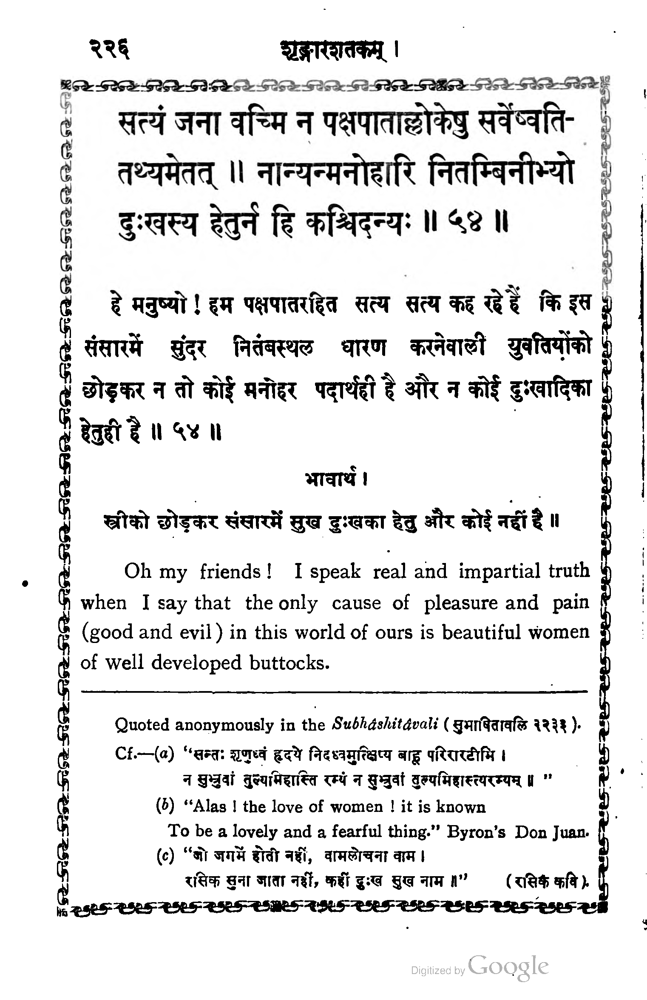 |
satyaṃ janā vacmi na pakṣa-pātāl
lokeṣu saptasv api tathyam etat |
nānyan manohāri nitambinībhyo
duḥkhaika-hetur na ca kaścid anyaḥ || BharSt_2.40 ||
|
WHAT DELIGHTS AND HURTS
It is the truth sans prejudice I speak;
Ye people, heed this truth forever true;
All that delights in women you must seek,
And all that hurts, you find in women too.
|
|
169 |
|
tāvad eva kṛtinām api sphuratyeṣa
nirmala-viveka-dīpakaḥ |
yāvad eva na kuraṅga-cakṣuṣāṃ
tāḍyate caṭula-locanāñcalaiḥ || BharSt_2.70 ||
|
|
170 |
|
vacasi bhavati saṅga-tyāgam uddiśya vārtā
śruti-mukhara-mukhānāṃ kevalaṃ paṇḍitānām |
jaghanam aruṇa-ratna-granthi-kāñcī-kalāpaṃ
kuvalaya-nayanānāṃ ko vihātuṃ samarthaḥ || BharSt_2.71 ||
|
The pious scholar talks and talks
Of leaving girls alone;
With tinkling girdle in She walks
And he must change his tone.
|
|
171 |
|
sva-para-pratārako 'sau
nindati yo 'līka-paṇḍito yuvatīḥ |
yasmāt tapaso 'pi phalaṃ
svargaḥ svarge 'pi cāpsarasaḥ || BharSt_2.72 ||
|
THE WISE MISOGYNIST
The wise misogynist, poor soul,
To self-deceit is given;
For heaven rewards his self-conrrol,
And women swarm in heaven.
|
|
172 |
|
mattebha-kumbha-dalane bhuvi santi dhīrāḥ
kecit pracaṇḍa-mṛga-rāja-vadhe 'pi dakṣāḥ |
kintu bravīmi balināṃ purataḥ prasahya
kandarpa-darpa-dalane viralā manuṣyāḥ || BharSt_2.73 ||
|
THE BRAVEST OF THE BRAVE
A few brave men pursue
Rogue elephants to death;
There are a braver few
Who stop the lion's breath;
The bravest of the brave-
And fewer yet they prove-
Are they who can enslave
The haughty god of love.
|
| 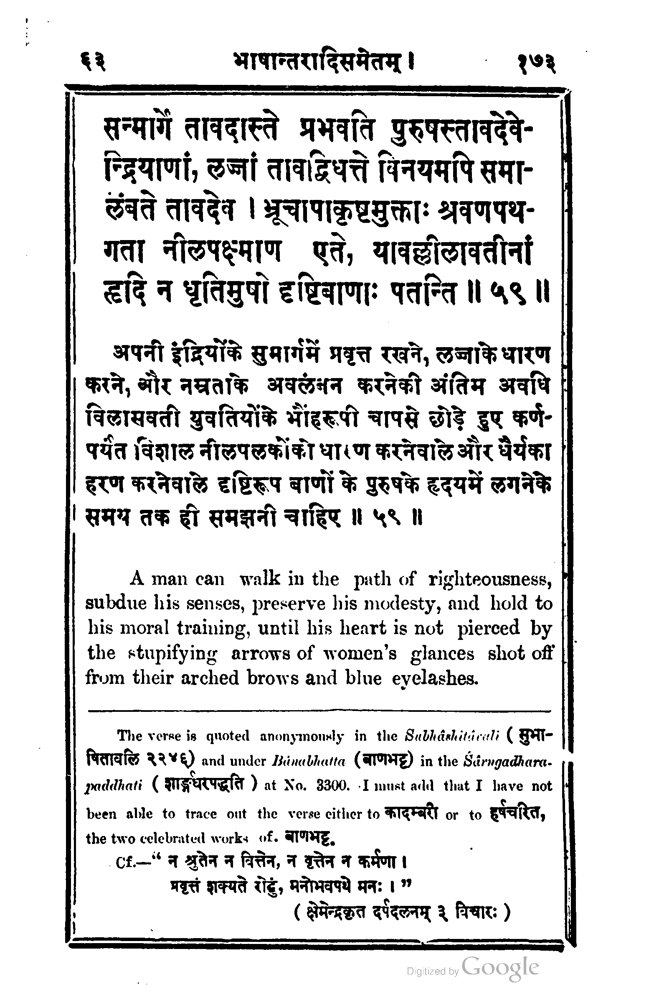 |
173 |
|
san-mārge tāvad āste prabhavati ca naras tāvad evendriyāṇāṃ
lajjāṃ tāvad vidhatte vinayam api samālambate tāvad eva |
bhrū-cāpākṛṣṭa-muktāḥ śravaṇa-patha-gatā nīla-pakṣmāṇa ete
yāval līlāvatīnāṃ hṛdi na dhṛtimuṣo dṛṣṭi-bāṇāḥ patanti || BharSt_2.74 ||
|
 |
174 |
|
unmatta-prema-saṃrambhād
ārabhante yad-aṅganāḥ |
tatra pratyūham ādhātuṃ
brahmāpi khalu kātaraḥ || BharSt_2.75 ||
|
WHEN WOMAN WILLS
When loving woman wants her way.
God hesitates to say her nay.
|
|
175 |
|
tāvan mahattvaṃ pāṇḍityaṃ
kulīnatvaṃ vivekitā |
yāvaj jvalati nāṅgeṣu
hataḥ pañceṣu-pāvakaḥ || BharSt_2.76 ||
|
FLAMING BANNERS
Learning and dignity,
Wisdom and manners
Last till the god of love
Plants flaming banners.
|
|
176 |
|
śāstrajño 'pi praguṇi-tanayo 'tyānta-bādhāpi bāḍhaṃ
saṃsāre 'smin bhavati viralo bhājanaṃ sad-gatīnām |
yenaitasmin niraya-nagara-dvāram udghāṭayantī
vāmākṣīṇāṃ bhavati kuṭilā bhrū-latā kuñcikeva || BharSt_2.77 ||
|
WHERE EDUCATION FAILS
Though many youths a training get
In law, religion, etiquette,
Why are there few whose actions would,
Interpreted, seem wholly good?
Some arching brow is sure to be
As cunning as a master-key,
That serves its purpose passing well
In flinging wide the gates of hell.
|
|
177 |
|
kṛśaḥ kāṇaḥ khañjaḥ śravaṇa-rahitaḥ puccha-vikalo
vraṇī pūya-klinnaḥ kṛmi-kula-śatair āvṛta-tanuḥ |
kṣudhā kṣāmo jīrṇaḥ piṭharaka-kapālārpita-galaḥ
śunīm anveti śvā hatam api ca hanty eva madanaḥ || BharSt_2.78 ||
|
|
178 |
|
strī-mudrāṃ kusumāyudhasya jayinīṃ sarvārtha-sampat-karīṃ
ye mūḍhāḥ pravihāya yānti kudhiyo mithyā-phalānveṣiṇaḥ |
te tenaiva nihatya nirdayataraṃ nagnīkṛtā muṇḍitāḥ
kecit pañca-śikhī-kṛtāś ca jaṭilāḥ kāpālikāś cāpare || BharSt_2.79 ||
|
|
179 |
|
viśvāmitra-parāśara-prabhṛtayo vātāmbu-parṇāśanās
te 'pi strī-mukha-paṅkajaṃ sulalitaṃ dṛṣṭvaiva mohaṃ gatāḥ |
śālyannaṃ sa-ghṛtaṃ payo-dadhi-yutaṃ ye bhuñjate mānavās
teṣām indriya-nigraho yadi bhaved vindhyaḥ plavet sāgare || BharSt_2.80 ||
|
IMPOSSIBLE!
The consecrated saints of old
Who lived on water, leaves, and air,
Went mad with love when they beheld
A face that showed how maids are fair.
And if the common men who eat
Their rice and milk and curds and ghee,
Should curb the wish for things so sweet,
The mountains would fly oversea.
|
|
180 |
|
saṃsāre 'sminn asāre kunṛpati-bhavana-dvāra-sevā-kalaṅkavyāsaṅga-
vyasta-dhairyaṃ katham amala-dhiyo mānasaṃ saṃvidadhyuḥ |
yady etāḥ prodyad-indu-dyuti-nicaya-bhṛto na syur ambhoja-netrāḥ
preṅkhat-kāñcī-kalāpāḥ stana-bhara-vinaman-madhya-bhājas taruṇyaḥ || BharSt_2.31 ||
|
|
181 |
|
siddhādhyāsita-kandare hara-vṛṣa-skandhāvarugṇa-drume
gaṅgā-dhauta-śilā-tale himavataḥ sthāne sthite śreyasi |
kaḥ kurvīta śiraḥ praṇāma-malinaṃ mlānaṃ manasvī jano
yad-vitrasta-kuraṅga-śāva-nayanā na syuḥ smarāstraṃ striyaḥ || BharSt_2.32 ||
|
|
182 |
|
saṃsāra tava paryanta-padavī na davīyasī |
antarā dustarā na syur yadi te madirekṣaṇām || BharSt_2.33 ||
|
HINDRANCES
'Twould not be hard, through life's gray sea
To find the track;
But fawn-eyed women hinder me,
And hold me back.
|
|
|
|
diśa vana-hariṇībhyo vaṃśa-kāṇḍa-cchavīnāṃ
kavalam upala-koṭi-cchinna-mūlaṃ kuśānām |
śaka-yuvati-kapolāpāṇḍutāmbūla-vallīdalam
aruṇa-nakhāgraiḥ pāṭitaṃ vā vadhūbhyaḥ || BharSt_2.34 ||
|
|
183 |
|
rājas-tṛṣṇāmburāśer na hi jagati gataḥ kaścid evāvasānaṃ
ko vārtho 'rthaiḥ prabhūtaiḥ sva-vapuṣi galite yauvane sānurāge |
gacchāmaḥ sadma yāvad vikasita-nayanendīvarālokinīnāmākramyākramya
rūpaṃ jhaṭiti na jarayā lupyate preyasīnām || BharSt_2.28 ||
|
|
184 |
|
rāgasyāgāram ekaṃ naraka-śata-mahā-duḥkha-samprāpti-hetur
mohasyotpatti-bījaṃ jaladhara-paṭalaṃ jñāna-tārādhipasya |
kandarpasyaika-mitraṃ prakaṭita-vividha-spaṣṭa-doṣa-prabandhaṃ
loke 'smin na hy artha-vraja-kula-bhavana-yauvanād anyad asti || BharSt_2.29 ||
|
YOUTH
A bed of poison-flowers is youth,
A cloud that hides the moon of truth,
A linked chain of passions fell,
Source of the hundred woes of hell,
The dwelling-place of every badness,
The friend of Love, the seed of madness.
|
|
185 |
|
śṛṅgāra-druma-nīrade prasṛmara-krīḍā-rasa-srotasi
pradyumna-priya-bāndhave catura-vāṅ-muktā-phalodanvati |
tanvī-netra-cakora-pāvana-vidhau saubhāgya-lakṣmī-nidhau
dhanyaḥ ko 'pi na vikriyāṃ kalayati prāpte nave yauvane || BharSt_2.30 ||
|
|
186 |
|
kāntety utpala-locaneti vipula-śroṇī-bharety unnamat
pīnottuṅga-payodhareti samukhāmbhojeti subhrūr iti |
dṛṣṭvā mādyati modate 'bhiramate prastauti vidvān api
pratyakṣāśuci-bhastrikāṃ striyam aho mohasya duśceṣṭitam || BharSt_2.41 ||
|
|
187 |
|
smṛtā bhavati tāpāya dṛṣṭā conmāda-kāriṇī |
spṛṣṭā bhavati mohāya sā nāma dayitā katham || BharSt_2.42 ||
|
CAN SHE BE DEAR?
The thought of her is saddening,
The sight of her is fear,
The touch of her is maddening—
Can she be really dear?
|
|
188 |
|
tāvad evāmṛtamayī yāval locana-gocarā |
cakṣuṣ-pathād atītā tu viṣād apy atiricyate || BharSt_2.43 ||
|
|
189 |
|
nāmṛtaṃ na viṣaṃ kiñcid etāṃ muktvā nitambinīm |
saivāmṛta-latā raktā viraktā viṣa-vallarī || BharSt_2.44 ||
|
NECTAR AND POISON
All nectar and all poison lives
In woman's changing states;
For she is nectar when she loves,
And poison when she hates.
|
|
190 |
|
āvartaḥ saṃśayānām avinaya-bhuvanaṃ paṭṭaṇaṃ sāhasānāṃ
doṣāṇāṃ sannidhānaṃ kapaṭa-śata-mayaṃ kṣetram apratyayānām |
svarga-dvārasya vighno naraka-pura-mukha sarvamāyākaraṇḍaṃ
strī-yantraṃ kena sṛṣṭaṃ viṣam amṛtamayaṃ prāṇi-lokasya pāśaḥ || BharSt_2.45 ||
|
WOMAN
Abode of wanton impudence,
Sin's palace, field of false pretense,
Whirlpool of doubts, and basket stored
With tricks and mean deception's hoard,
Bolt barring heaven's gate too well,
Wide portal to the house of hell—
Who made that strange contrivance, woman,
That poison sweet, which keeps us human?
|
|
191 |
|
no satyena mṛgāṅka eṣa vadanī-bhūto na cendīvaradvandvaṃ
locanatāṃ gata na kanakair apy aṅga-yaṣṭiḥ kṛtā |
kintv evaṃ kavibhiḥ pratārita-manās tattvaṃ vijānann api
tvaṅ-māṃsāsthi-mayaṃ vapur mṛga-dṛśāṃ mando janaḥ sevate || BharSt_2.46 ||
|
|
192 |
|
līlāvatīnāṃ sahajā vilāsāsta
eva mūḍhasya hṛdi sphuranti |
rāgo nalinyā hi nisarga-siddhastatra
bhramty eva vṛthā ṣaḍ-aṅghriḥ || BharSt_2.47 ||
|
NATURAL BEAUTY
The color on the lily's face
Is natural. So is maiden grace.
The bee flits vainly round the flower,
The fool round beauty's virgin power.
|
|
193 |
|
yad etat pūrṇendu-dyuti-haram udārākṛti paraṃ
mukhābjaṃ tanvaṅgyāḥ kila vasati yatrādhara-madhu |
idaṃ tat kiṃ pāka-druma-phalam idānīm atirasavyatīte 'smin
kāle viṣam iva bhaviṣyty asukhadam || BharSt_2.48 ||
|
|
|
|
unmīlat-trivalī-taraṅga-nilayā prottuṅga-pīna-stana
dvandvenodgata-cakravāka-yugalā vaktrāmbujodbhāsinī |
kāntākāra-dharā nadīyam abhitaḥ krūrātra nāpekṣate
saṃsārārṇava-majjanaṃ yadi tadā dūreṇa santyajyatām || BharSt_2.49 ||
|
|
194 |
|
jalpanti sārdham anyena paśyanty anyaṃ savibhramāḥ |
hṛd-gataṃ cintayanty anyaṃ priyaḥ ko nāma yoṣitām || BharSt_2.50 ||
|
WHOM DOES SHE LOVE?
With one she gossips full of art;
Her glances with a second flirt;
She holds another in her heart:
Whom does she love enough to hurt?
|
|
195 |
|
madhu tiṣṭhati vāci yoṣitāṃ hṛdi hālāhalam eva kevalam |
ataeva nipīyate 'dharo hṛdayaṃ muṣṭibhir eva tāḍyate || BharSt_2.51 ||
|
|
196 |
|
apasara sakhe dūrād asmāt kaṭākṣa-viṣānalāt
prakṛti-viṣamād yoṣit-sarpād vilāsa-phaṇābhṛtaḥ |
itara-phaṇinā daṣṭaḥ śakyaś cikitsitum auṣadhaiścatur-
vanitābhogi-grastaṃ hi mantriṇaḥ || BharSt_2.52 ||
|
|
197 |
|
vistāritaṃ makara-ketana-dhīvareṇa
strī-saṃjñitaṃ baḍiśam atra bhavāmbu-rāśau |
yenācirāt tad-adharāmiṣa-lola-martya-
matsyān vikṛṣya vipacaty anurāga-vahnau || BharSt_2.53 ||
|
LOVE, THE FISHER
Love, the fisher, casts his woman-hook
Into the sea of lust and fond desire,
And just as soon as greedy men-fish look
And snap the red bait, lips so sweet, so dire,
Then he is quick to catch them and to cook
The hungry wretches over passion's fire.
|
|
198 |
|
kāminī-kāya-kāntāre kuca-parvata-durgame |
mā saṃcara manaḥ pāntha tatrāste smara-taskaraḥ || BharSt_2.54 ||
|
THE BLIND FOREST
The lady's body is a forest blind,
With dangerous hills, her bosom fair;
Think not to wander there, my mind;
The robber, Love, is lurking there.
|
|
199 |
|
vyādīrgheṇa calena vaktra-gatinā tejasvinā bhoginā
nīlābja-dyutināhinā param ahaṃ dṛṣṭo na tac-cakṣuṣā |
dṛṣṭe santi cikitsakā diśi diśi prāyeṇa darmārthino
mugdhākṣkṣaṇa-vīkṣitasya na hi me vaidyo na cāpy auṣadham || BharSt_2.55 ||
|
THE SERPENT-WOMAN
Avoid the poison-glance, my friends;
The serpent-woman flee;
Her crooked path has crooked ends;
Her hood is coquetry.
If you are stung by common snakes,
Perhaps you will not die;
If poison from a woman takes,
The doctors say good-bye.
|
|
200 |
|
mattebhakumbhapariṇāhini kuṅkumārdre
kāntāpayodharataṭe rasakhedakhinnaḥ ||
vakṣo nidhāya bhujapañjaramadhyavartī
dhanyaḥ kṣapāṃ kṣapayati kṣaṇalabdhanidraḥ ||
|
|
201 |
|
na gamyo mantrāṇāṃ na ca bhavati bhaiṣajya-viṣayo
na cāpi pradhvaṃsaṃ vrajati vividhaiḥ śāntika-śataiḥ |
bhramāveśād aṅge kam api vidadhad bhaṅgam asakṛt
smarāpasmāro 'yaṃ bhramayati dṛśaṃ ghūrṇayati ca || BharSt_2.57 ||
|
| 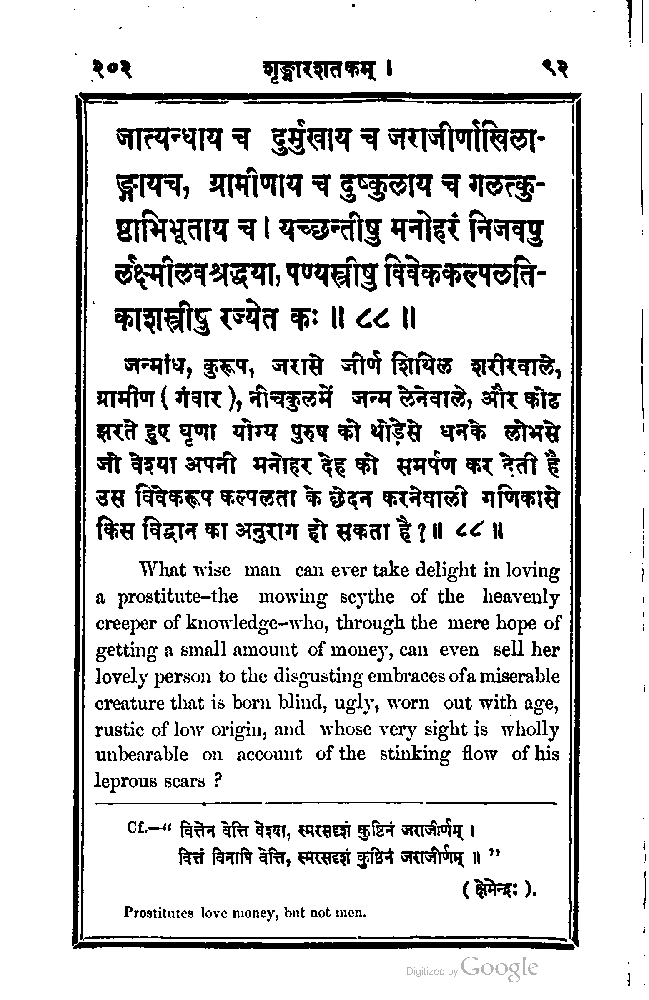 |
202 |
|
jāty-andhāya ca durmukhāya ca jarājīrṇā khilāṅgāya ca
grāmīṇāya ca duṣkulāya ca galat-kuṣṭhābhibhūtāya ca |
yacchantīṣu manoharaṃ nija-vapu-lakṣmī-lava-śraddhayā
paṇya-strīṣu viveka-kalpa-latikāśa-strīṣu rājyeta kaḥ || BharSt_2.58 ||
|
|
203 |
|
veśyāsau madana-jvālā
rūpe 'ndhana-vivardhitā |
kāmibhir yatra hūyante
yauvanāni dhanāni ca || BharSt_2.59 ||
|
|
204 |
|
kaś cumbati kula-puruṣo veśyādhara-pallavaṃ manojñam api |
cārabhaṭa-cora-ceṭaka-naṭa-viṭa-niṣṭhīvana-śarāvam || BharSt_2.60 ||
|
| 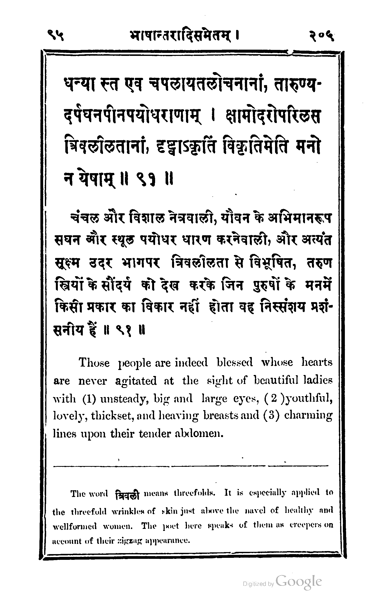 |
205 |
|
dhanyās ta eva dhavalāyata-locanānāṃ
tāruṇya-darpa-ghana-pīna-payodharāṇām |
kṣāmodaropari lasat-trivalī-latānāṃ
dṛṣṭvākṛtiṃ vikṛtim eti mano na yeṣām || BharSt_2.61 ||
|
|
|
|
kiṃ kandarpa karaṃ kadarthayasi re kodaṇḍa-ṭaṅkāritaṃ
re re kokila komalaṃ kala-ravaṃ kiṃ vā vṛthā jalpasi |
mugdhe snigdha-vidagdha-cāru-madhurair lolaiḥ kaṭākṣair alaṃ
cetaś cumbita-candra-cūḍa-caraṇa-dhyānāmṛtaṃ vartate || BharSt_2.64 ||
|
|
206 |
|
praduyat-prauḍha-priyaṅgu-dyuti-bhṛti vikasat-kunda-mādyad-dvirephe
kāle prāleya-vāta-pracala-vilasitodāra-mandāra-dhāmni |
yeṣāṃ no kaṇṭha-lagnā kṣaṇam api tuhina-kṣoda-dakṣā mṛgākṣī
tesām āyāma-yāmā yama-sadana-samā yāminī yāti yūnām || BharSt_2.98 ||
|
|
207 |
|
sudhāmayo'pi kṣayarogaśāntyai nāsāgramuktāphalakacchalena |
anaṅgasaṃjīvanadṛṣṭaśaktirmukhāmṛtaṃ te pibatīva candraḥ ||
|
|
208 |
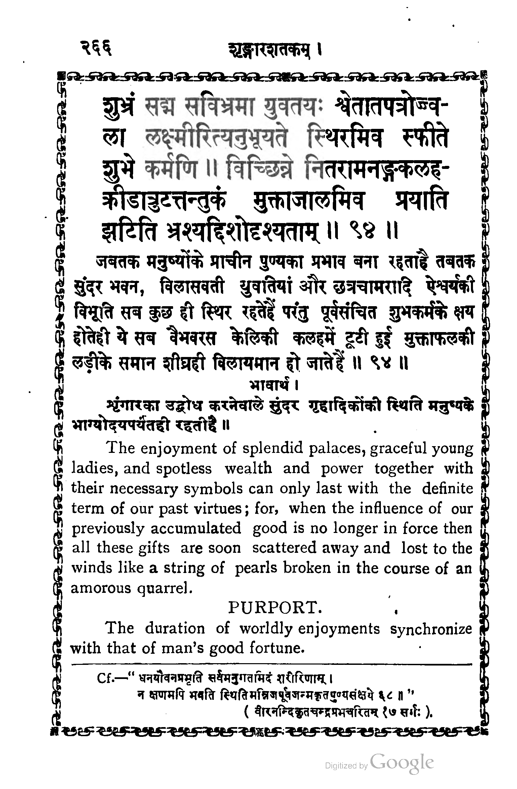 |
śubhraṃ sadma savibhramā yuvatayaḥ śvetātapatrojjvalā
lakṣmīrityanubhūyate ciramanusyūte śubhe karmaṇi |
vicchinne nitarāmanaṅgakalahakrīḍātruṭattantukaṃ
muktājālamiva prayāti jhaṭiti bhraśyaddiśo dṛśyatām ||
|
|
209 |
|
ajitātmasu sambaddhaḥ samādhikṛtacāpalaḥ |
bhujaṅgakuṭilaḥ stabdho bhrūvikṣepaḥ khalāyate ||
|
|
210 |
|
kiṃ gatena yadi sā na jīvati
prāṇiti priyatamā tathāpi kim |
ity udīkṣya nava-megha-mālikāṃ
na prayāti pathikaḥ sva-mandiram || BharSt_2.66 ||
|
|
|
|
yadā yogābhyāsa-vyasana-kṛśayor ātma-manasoravicchinnā
maitrī sphurati kṛtinas tasya kim u taiḥ |
priyāṇām ālāpair adhara-madhubhir vaktra-vidhubhiḥ
saniśvāsāmodaiḥ sakuca-kalaśāśleṣa-surataiḥ || BharSt_2.68 ||
|
|
211 |
|
eko rāgiṣu rājate priyatamā-dehārdha-hārī haro
nīrāgeṣu jano vimukta-lalanāsaṅgo na yasmāt paraḥ |
durvāra-smara-bāṇa-pannaga-viṣa-vyābiddha-mugdho janaḥ
śeṣaḥ kāma-viḍambitān na viṣayān bhoktuṃ na moktuṃ kṣamaḥ || BharSt_3.17 ||
|
|
|
|
yady asya nāsti ruciraṃ tasmiṃs tasya spṛhā manojñe 'pi |
ramaṇīye 'pi sudhāṃśau na manaḥ-kāmaḥ sarojinyāḥ || BharSt_2.101 ||
|
|
212 |
|
vairāgye saṃcaraty eko nītau bhramati cāparaḥ |
śṛṅgāre ramate kaścid bhuvi bhedāḥ parasparam || BharSt_2.102 ||
|
|
213 |
|
virahe 'pi saṅgamaḥ khalu
parasparaṃ saṅgataṃ mano yeṣām |
hṛdayam api vighaṭṭitaṃ cet
saṅgī virahaṃ viśeṣayati || BharSt_2.65 ||
|
|
214 |
|
ime tāruṇya-śrī-nava-parimalāḥ prauḍha-suratapratāpa-
prārambhāḥ smara-vijaya-dāna-pratibhuvaḥ |
ciraṃ cetaś corā abhinava-vikāraika-guravo
vilāsa-vyāpārāḥ kim api vijayante mṛga-dṛśām || BharSt_2.19 ||
|
| 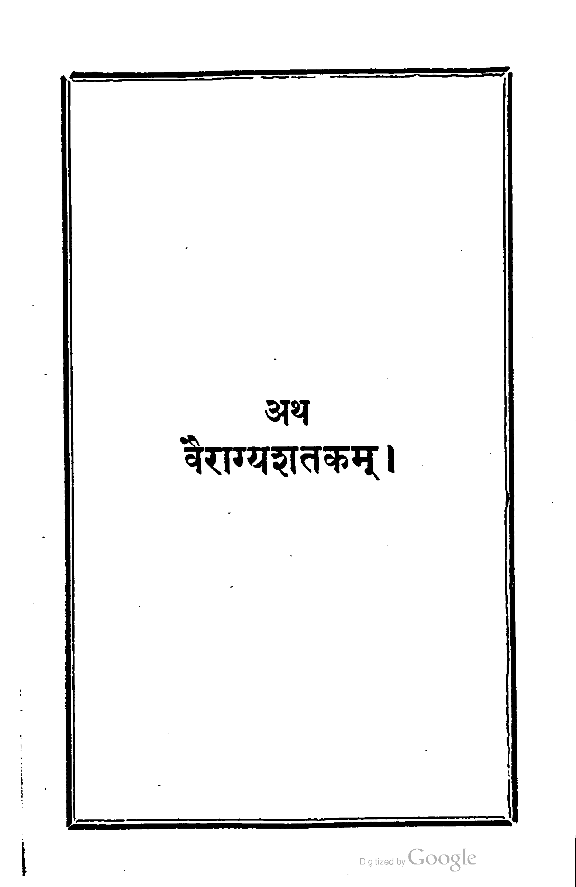 |
215 |
|
|
216 |
|
|
217 |
|
cūḍottaṃsita-candra-cāru-kalikā-cañcac-chikhā-bhāsvaro
līlā-dagdha-vilola-kāma-śalabhaḥ śreyo-daśāgre sphuran |
antaḥ-sphūrjad-apāra-moha-timira-prāg-bhāram uccāṭayan
śvetaḥ-sadmani yogināṃ vijayate jñāna-pradīpo haraḥ || BharSt_3.1 ||
|
|
218 |
|
boddhāro matsara-grastāḥ
prabhavaḥ smaya-dūṣitāḥ |
abodhopahatāḥ cānye
jīrṇam aṅge subhāṣitam || BharSt_1.2 ||
|
WHY MY POEMS DIED
The critics all were jealous,
The patrons full of pride,
The public had no judgment;
And so my poems died.
|
|
219 |
|
na saṃsārotpannaṃ caritam anupaśyāmi kuśalaṃ
vipākaḥ puṇyānāṃ janayati bhayaṃ me vimṛśataḥ |
mahadbhiḥ puṇyaughaiś cira-parigṛhītāś ca viṣayā
mahānto jāyante vyasanam iva dātuṃ viṣayiṇām || BharSt_3.11 ||
|
|
220 |
 |
utkhātaṃ nidhi-śaṅkayā kṣiti-talaṃ dhmātā girer dhātavo
nistīrṇaḥ saritāṃ patir nṛpatayo yatnena santoṣitāḥ |
mantrārādhana-tat-pareṇa manasā nītāḥ śmaśāne niśāḥ
prāptaḥ kāṇa-varāṭako 'pi na mayā tṛṣṇe sakāmā bhava || BharSt_3.3 ||
|
OH, MIGHT I END THE QUEST!
I dug beneath the earth most greedily
In search of hidden treasure;
I smelted ore; I crossed the mighty sea,
Forgetting every pleasure;
I cringed to kings; and muddling all my brains
With magic, lost my rest:
But never got a penny for my pains;
Oh, might I end the quest!
|
|
221 |
|
bhrāntaṃ deśam aneka-durga-viṣamaṃ prāptaṃ na kiñcit phalaṃ
tyaktvā jāti-kulābhimānam ucitaṃ sevā kṛtā niṣphalā |
bhuktaṃ māna-vivarjitaṃ para-gṛheṣv āśaṅkayā kākavat
tṛṣṇe jṛmbhasi pāpa-karma-piśune nādyāpi santuṣyasi || BharSt_3.2 ||
|
|
222 |
 |
khalālāpāḥ sauḍhāḥ katham api tad-ārādhana-parairnigṛhyāntar-
bāṣpaṃ hasitam api śūnyena manasā |
kṛto vitta-stambha-pratihata-dhiyām añjalir api
tvam āśe moghāśe kima aparam ato nartayasi mām || BharSt_3.4 ||
|
|
223 |
|
ādityasya gatāgatair aharahaḥ saṃkṣīyate jīvitaṃ
vyāpārair bahu-kārya-bhāra-gurubhiḥ kālo 'pi na jñāyate |
dṛṣṭvā janma-jarā-vipatti-maraṇaṃ trāsaś ca notpadyate
pītvā mohamayīṃ pramāda-madirām unmatta-bhūtaṃ jagat || BharSt_3.43 ||
|
THE WAY OF THE WORLD
In daily journeys of the sun
Our little life is quickly done;
In anxious duties of the day
The hours unnoticed slip away;
Though birth and age are ever near,
And grief and death, we do not fear:
The world forgets its sore distress,
Goes mad with wine of heedlessness.
|
|
224 |
|
dīnā dīna-mukhaiḥ sadaiva śiśukairākṛṣṭa-jīrṇāmbarā
krośadbhiḥ kṣudhitair niranna-vidhurā dṛśyā na ced gehinī |
yācñā-bhaṅga-bhayena gadgada-gala-truṭyad-vilīnākṣaraṃ
ko dehīti vadet sva-dagdha-jaṭharasyārthe manasvī pumān || BharSt_3.21 ||
|
WHY MEN BEG
Is there a man of spirit who would beg
In broken words that stumble with his sobbing,
Harsh sobs of him who fears a surly "No!"
And all to ease his belly's empty throbbing?
None but the man who sees his wretched wife
Sad always, sees her worn and ragged skins,
Sees sad-faced babies tugging at their folds
With screams that tell how fiercely hunger hurts.
|
|
225 |
|
nivṛttā bhogecchā puruṣa-bahu-māno 'pi galitaḥ
samānāḥ svar-yātāḥ sapadi suhṛdo jīvita-samāḥ |
śanair yaṣṭy utthānaṃ ghana-timira-ruddhe ca nayane
aho mūḍhaḥ kāyas tad api maraṇāpāya-cakitaḥ || BharSt_3.9 ||
|
THE FEAR OF DEATH
The joy I felt in life is dead,
And men's respect lor me is fled:
My dear-loved friends are all in heaven
To whom my days were gladly given;
I rise up slowly with a stick,
And in my eyes the dark is thick:
But the body still is obstinate;
It feared Death soon, it fears him late.
|
|
226 |
|
hiṃsā-śūnyam ayatna-labhyam aśanaṃ dhātrā marut-kalpitaṃ
vyālānaṃ paśavas tṛṇāṅkura-bhujas tuṣṭāḥ sthalī-śāyinaḥ |
saṃsārārṇava-laṅghana-kṣama-dhiyāṃ vṛttiḥ kṛtā sā nṛṇāṃ
tām anveṣayatāṃ prayānti satataṃ sarvaṃ samāptiṃ guṇāḥ || BharSt_3.97 ||
|
|
227 |
|
na dhyānaṃ padam īśvarasya vidhivat saṃsāra-vicchittaye
svarga-dvāra-kapāṭa-pāṭana-paṭur dharmo 'pi nopārjitaḥ |
nārī-pīna-payodharoru-yugalaṃ svapne 'pi nāliṅgitaṃ
mātuḥ kevalam eva yauvana-vana-cchede kuṭhārā vayam || BharSt_3.45 ||
|
A WASTED LIFE-III
The paths of thought I never trod
Which lead to unity in God;
Nor were my days to virtue given
Which opens wide the gates of heaven;
Delights of love that men esteem
Were mine not even in a dream:
I was a sorry axe in sooth
To cut the tree, my mother's youth.
|
|
228 |
|
bhogā na bhuktā vayam eva bhuktās
tapo na taptaṃ vayam eva taptāḥ |
kālo na yāto vayam eva yātāstṛṣṇā
na jīrṇā vayam eva jīrṇāḥ || BharSt_3.7 ||
|
DESIRE IS YOUNG
Not time, but we, have passed away;
Not virtue, we ourselves grow cold;
Not joys, but we, no longer stay:
Desire is young, but we are old.
|
| 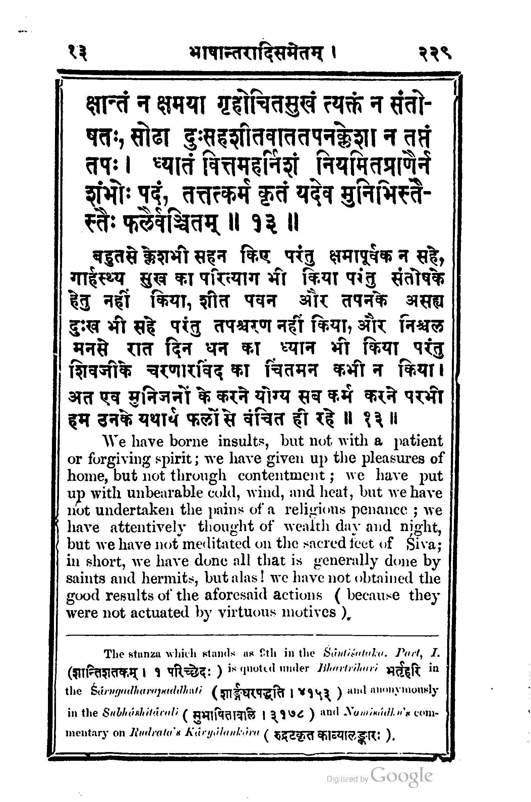 |
229 |
|
kṣāntaṃ na kṣamayā gṛhocita-sukhaṃ tyaktaṃ na santoṣataḥ
soḍho duḥsaha-śīta-tāpa-pavana-kleśo na taptaṃ tapaḥ |
dhyātaṃ vittam ahar-niśaṃ nityamita-prāṇair na śambhoḥ padaṃ
tat-tat-karma kṛtaṃ yad eva munibhis tais taiḥ phalair vañcitāḥ || BharSt_3.6 ||
|
VAIN EFFORT
The joys of home I have resigned,
But not for higher ends;
To mercy I was not inclined
In treating foes as friends;
Storm, heat, and cold I faced unbent,
But not to save my soul;
My days in centered thought were spent,
My heart in stern control—
Alas! I did not think of God,
But wealth, to win and guard;
The paths the pious tread, I trod,
And fail of their reward.
|
|
230 |
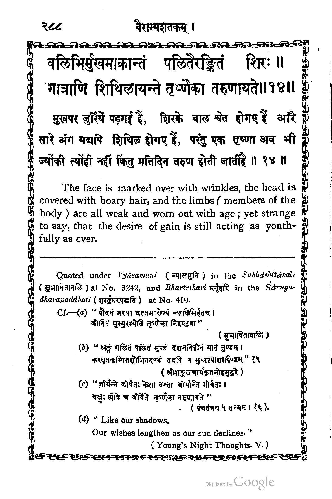 |
balibhir mukham ākrāntaṃ palitenāṅkitaṃ śiraḥ |
gātrāṇi śithilāyante tṛṣṇaikā taruṇāyate || BharSt_3.8 ||
|
LOVE IS YOUNG
The wrinkles on my face are all untold;
My hair is gray and thin;
My limbs are sadly feeble grown, and old:
But love is young, and sin.
|
|
231 |
|
yenaivāmbarakhaṇḍena saṃvīto niśi candramāḥ |
tenaiva ca divā bhānur aho daurgatyametayoḥ ||
|
POVERTY
The moon by night, the sun by day
Continue in their heavenly way;
One rag they have, one ragged cloud
To serve them both as robe and shroud.
Poor things!
|
|
232 |
|
avaśyaṃ yātāraś cirataram uṣitvāpi viṣayā
viyoge ko bhedas tyajati na jano yat svayam amūn |
vrajantaḥ svātantryād atula-paritāpāya manasaḥ
svayaṃ tyaktā hy ete śama-sukham anantaṃ vidadhati || BharSt_3.12 ||
|
A REASON FOR RENUNCIATION
Possessions leave us at the end,
However long they stay;
Then why not cast aside, my friend,
What leaves us anyway?
And if they leave against our will,
The heart takes time in mending;
If given willingly, they fill
That heart with joy unending.
|
| 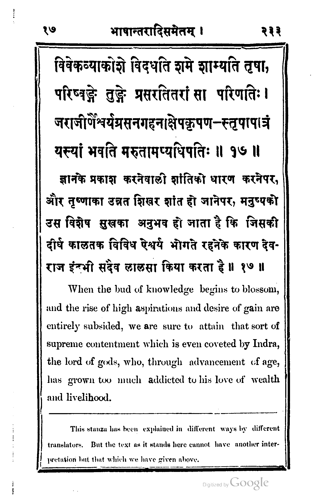 |
233 |
|
viveka-vyākośe vidadhati same śāmyati tṛṣā
pariṣvaṅge tuṅge prasaratitarāṃ sā pariṇatā |
jarājīrṇaiśvarya-grasana-gahanākṣepa-kṛpaṇastṛṣāpātraṃ
yasyāṃ bhavati marutām apy adhipatiḥ || BharSt_3.8*1 ||
|
|
234 |
|
bhikṣā-śataṃ tad api nīrasam eka-bāraṃ
śayyā ca bhūḥ parijano nija-deha-mātram |
vastraṃ viśīrṇa-śata-khaṇḍa-mayī ca kanthā
hā hā tathāpi viṣayā na parityajanti || BharSt_3.15 ||
|
|
235 |
|
stanau māṃsa-granthī kanaka-kalaśāv ity upamitī
mukhaṃ śleṣmāgāraṃ tad api ca śaśāṅkena tulitam |
sravan-mūtra-klinnaṃ kari-vara-śira-spardhi jaghanaṃ
muhur nindyaṃ rūpaṃ kavi-jana-viśeṣair guru-kṛtam || BharSt_3.16 ||
|
|
236 |
|
ajānan dāhātmyaṃ patatu śalabhas tīvra-dahane
sa mīno 'py ajñānād baḍiśa-yutam aśnātu piśitam |
vijānanto 'py ete vayam iha viyaj jāla-jaṭilān
na muñcāmaḥ kānām ahaha gahano moha-mahimā || BharSt_3.18 ||
|
THE FAILURE OF EDUCATION
Uneducated moths will fly
Into the blazing fire;
Ignorant fish will take the hook
In the bait of their desire.
And we who know so many things
Forget the price, and feed
The creeping lusts that coil us round—
Oh! We are fools indeed.
|
|
237 |
|
phalam alam aśanāya svādu pānāya toyaṃ
kṣitir api śayanārthaṃ vāsase valkalaṃ ca |
nava-ghana-madhupāna-bhrānta-sarvendriyāṇāmavinayam
anumantuṃ notsahe durjanānām || BharSt_3.54 ||
|
|
238 |
|
vipula-hṛdayair īśair etaj jagaj janitaṃ purā
vidhṛtam aparair dattaṃ cānyair vijitya tṛṇaṃ yathā |
iha hi bhuvanāny anyair dhīrāś caturdaśa bhuñjate
katipaya-pura-svāmye puṃsāṃ ka eṣa mada-jvaraḥ || BharSt_3.57 ||
|
|
239 |
|
tvaṃ rājā vayam apy upāsita-guru-prajñābhimānonnatāḥ
khyātas tvaṃ vibhavair yaśāṃsi kavayo dikṣu pratanvanti naḥ |
itthaṃ māna-dhanāti-dūram ubhayor apy āvayor antaraṃ
yady asmāsu parāṅmukho 'si vayam apy ekāntato niḥspṛhā || BharSt_3.51 ||
|
|
240 |
|
abhuktāyāṃ yasyāṃ kṣaṇam api na yātaṃ nṛpa-śatair
dhuvas tasyā lābhe ka iva bahumānaḥ kṣiti-bhṛtām |
tad-aṃśasyāpy aṃśe tad-avaya-leśe 'pi patayo
viṣāde kartavye vidadhati jaḍāḥ pratyuta mudam || BharSt_3.58 ||
|
|
241 |
|
mṛt-piṇḍo jala-rekhayā bala-yatiḥ sarvo 'py ayaṃ nanv aṇuḥ
svāṃśīkṛtya sa eva saṅgara-śatai rājñāṃ gaṇā bhuñjate |
ye dadyur dadato 'thavā kim aparaṃ kṣudrā daridraṃ bhṛśaṃ
dhig dhik tān puruṣādhamān dhanakaṇān vāñchanti tebhyo 'pi ye || BharSt_3.59 ||
|
THEY WANT THE EARTH
'Tis but a little ball of mud
With a streak of water round;
Yet kings for it will shed their blood,
As for a treasure found.
They cannot, will not leave the thing,
So poor are they, so mean;
And men will fawn on such a king!
Oh, shame upon the scene!
|
|
242 |
|
na naṭā nā viṭā na gāyakā na ca sabhyetara-vāda-cuñcavaḥ |
nṛpam īkṣitum atra ke vayaṃ stana-bhārān amitā na yoṣitaḥ || BharSt_3.56 ||
|
WHY GO TO COURT?
I am not fashion's changing sport,
I never acted, sang, nor hated;
What figure should I cut at court?
I am no lady languid-gaited.
|
|
243 |
|
purā vidvattāsīd upaśamavatāṃ kleśa-hataye
gatā kālenāsau viṣaya-sukha-siddhyai viṣayiṇām |
idānīṃ tu prekṣya kṣiti-tala-bhujaḥ śāstra-vimukhān
aho kaṣṭaṃ sāpi prati-dinam adhodhaḥ praviśati ||
|
THE DECLINE OF TRUE LEARNING
Once, learning slew the living woe
Of wise men. That was long ago.
She then disdained such service rare,
Became a practical affair.
But nowadays she sees that kings
Despise all intellectual things,
And sinking lower day by day,
She seems to vanish quite away.
|
|
244 |
|
sa jātaḥ ko 'py āsīn madana-ripuṇā mūrdhni dhavalaṃ
kapālaṃ yasyoccair vinihitam alaṅkāra-vidhaye |
nṛbhiḥ prāṇa-trāṇa-pravaṇa-matibhiḥ kaiścid adhunā
namadbhiḥ kaḥ puṃsām ayam atula-darpa-jvara-bharaḥ || BharSt_3.60 ||
|
|
245 |
|
arthānām īśiṣe tvaṃ vayam api ca girām īśmahe yāvad arthaṃ
śūras tvaṃ vādi-darpa-vyupaśamana-vidhāva-kṣayaṃ pāṭavaṃ naḥ |
sevante tvāṃ dhanāḍhyā matimalahatayemām api śrotu-kāmāmayy
apy āsthā na te cet tvayi mama nitarām eva rājann anāsthā || BharSt_3.52 ||
|
|
246 |
|
aśnīmahi vayaṃ bhikṣām āśāvāso vasīmahi |
śayīmahi mahī-pṛṣṭhe kurvīmahi kim īśvaraiḥ || BharSt_3.55 ||
|
IF ONLY WE MIGHT DRESS IN AIR
If only we might dress in air,
And eat what begging brings,
And sleep outdoors, we should not care
For all the money-kings.
|
|
247 |
|
māne mlāyini khaṇḍite ca vasuni vyarthe prayāte 'rthini
kṣīṇe bandhu-jane gate parijane naṣṭe śanair yauvane |
yuktaṃ kevalam etad eva sudhiyāṃ yaj jahnu-kanyā-payaḥpūtāgrāva-
girīndra-kandara-taṭī-kuñje nivāsaḥ kvacit || BharSt_3.78 ||
|
|
248 |
|
pareṣāṃ cetāṃsi pratidivasam ārādhya bahudhā
prasādaṃ kiṃ netuṃ viśasi hṛdaya kleśa-kalitam |
prasanne tvayy antaḥ-savayamudita-cintāmaṇi-gaṇo
viviktaḥ saṅkalpaḥ kim abhilaṣitaṃ puṣyati na te || BharSt_3.61 ||
|
|
249 |
|
sthitiḥ puṇyāraṇye saha paricayo hanta hariṇaiḥ
phalairmedhyā vṛttiḥ pratidivasatalpāni dṛṣadaḥ |
itīyaṃ sāmagrī bhavati harabhaktiṃ spṛhayatāṃ
vanaṃ vā gehaṃ vā sadṛśamupaśāntyekamanasām ||
|
|
250 |
 |
amīṣāṃ prāṇānāṃ tulita-visinī-patra-payasāṃ
kṛte kiṃ nāsmābhir vigalita-vivekair vyavasitam |
yad-āḍhyānām agre draviṇa-mada-niḥsaṃjña-manasāṃ
kṛtaṃ māva-vrīḍair nija-guṇa-kathā-pātakam api || BharSt_3.5 ||
|
|
251 |
|
atikrāntaḥ kālo laṭabhalalanābhogasubhago
bhramantaḥ śrāntāḥ smaḥ suciramiha saṃsārasaraṇau |
idānīṃ svaḥsindhostaṭabhuvi samākrandanagiraḥ
sutāraiḥ phūtkāraiḥ śiva śiva śiveti pratanumaḥ ||
|
|
252 |
|
sā ramyā nagarī mahān sa nṛpatiḥ sāmanta-cakraṃ ca tat
pārśve tasya ca sā vidagdha-pariṣat tāś candra-bimbānanāḥ |
udvṛttaḥ sa rāja-putra-nivahas te vandinas tāḥ kathāḥ
sarvaṃ yasya vaśād agāt smṛti-pathaṃ kālāya tasmai namaḥ || BharSt_3.41 ||
|
THERE WAS A NOBLE CITY
There was a noble city old,
A mighty king, and vassals bold;
And there were gathered scholars true,
And moon-faced ladies not a few;
And there were princes proud and free,
And stories told, and minstrelsy:
A memory now; we mourn their fall
And honor Time, who levels all.
|
|
253 |
|
vayaṃ yebhyo jātāś cira-parigatā eva khalu te
samaṃ yaiḥ saṃvṛddhāḥ smṛti-viṣayatāṃ te 'pi gamitāḥ |
idānīm ete smaḥ pratidivasam āsanna-patanā
gatās tulyāvasthāṃ sikatilanadī-tīra-tarubhiḥ || BharSt_3.48 ||
|
OLD AGE
Gone long ago are they who gave us birth;
Old friends are memories upon this earth;
Our lives are undermined and daily sink,
Like trees upon the river's sandy brink.
|
|
254 |
|
yatrānekaḥ kvacid api gṛhe tatra tiṣṭhaty athaiko
yatrāpy ekas tad anu bahavas tatra naiko 'pi cānte |
itthaṃ nayau rajani-divasau lolayan dvāv ivākṣau
kālaḥ kalyo bhuvana-phalake kraḍati prāṇi-śāraiḥ || BharSt_3.42 ||
|
THE CHESS-GAME
Where there were scattered pieces on the board,
There now is one;
Next, many slaughtered pieces are restored,
Then all are gone:
The dice are day and night; the board is life;
Time and again
Death plays a fearful chess-game with his wife—
The pawns are men.
|
|
255 |
 |
tapasyantaḥ santaḥ kim adhinivasāmaḥ sura-nadīṃ
guṇodārān dārān uta paricarāmaḥ savinayam |
pibāmaḥ śāstraughānuta-vividha-kāvyāmṛta-rasān
na vidmaḥ kiṃ kurmaḥ katipaya-nimeṣāyuṣi jane || BharSt_3.76 ||
|
CHOOSING A VOCATION
What shall I do in these few hours of life?
Live humbly with a sweet, religious wife?
Renounce the world, the ties of kindred sever,
And spend my days beside the sacred river?
Drink deep of honeyed poems' nectar-flow?
Or learn philosophy? I hardly know.
|
| 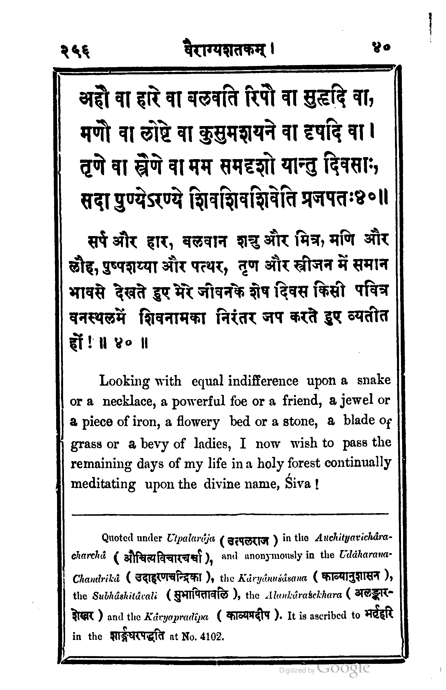 |
256 |
|
aho vā hāre vā balavati ripau vā suhṛdi vā
maṇau vā loṣṭhe vā kusuma-śayane vā dṛṣadi vā |
tṛṇe vā straiṇe vā mama sama-dṛśo yānti divasāḥ
kvacit puṇyāraṇye śiva śiva śiveti pralapataḥ || BharSt_3.100*3 ||
|
PEACE
I would not call a friend or foe mine own,
A gem or clod, a bed of flowers or stone,
A serpent or a string of precious pearls,
A bunch of grasses or a bunch of girls,
So might I see with calm, unwavering eye
My peaceful days move softly gliding by,
The while I murmured in a pious grove
To Shiva, Shiva, Shiva, all my love.
|
|
257 |
|
gaṅgā-tīre hima-giri-śilā-baddha-padmāsanasya
brahma-dhyānābhyasana-vidhinā yoga-nidrāṃ gatasya |
kiṃ tair bhāvyaṃ mama sudivasair yatra te nirviśaṅkāḥ
kaṇḍūyante jaraṭha-hariṇāḥ svāṅgam aṅge madīye || BharSt_3.98 ||
|
|
258 |
|
sphurat-sphāra-jyotsnādhavalita-tale kvāpi puline
sukhāsīnāḥ śānta-dhvantisu rajanīṣu dyu-saritaḥ |
bhavābhogodvignāḥ śiva śiva śivety uccavacasaḥ
kadā yāsyāmo 'targata-bahula-bāṣpākula-daśām || BharSt_3.85 ||
|
|
259 |
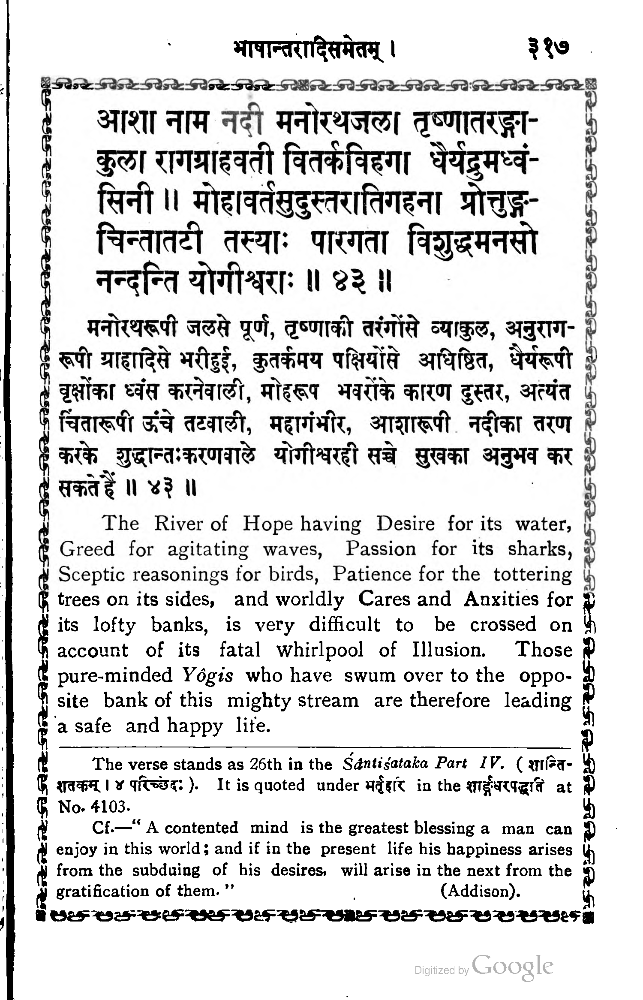 |
āśā nāma nadī manoratha-jalā tṛṣṇā-taraṅgākulā
rāga-grāhavatī vitarka-vihagā dhairya-druma-dhvaṃsinī |
mohāvarta-sudustarātigahanā prottuṅga-cintā-taṭī
tasyāḥ para-gatā viśuddham alaso nandanti yogīśvarāḥ || BharSt_3.10 ||
|
|
260 |
|
ā saṃsārāt tribhuvanam idaṃ cinvatāṃ tāt tādṛṅnaivāsmākaṃ
nayana-padavīṃ śrotra-mārgaṃ gato vā |
yo 'yaṃ dhatte viṣaya-kariṇo gāḍha-gūḍhābhimānakṣīvasyāntaḥ-
karaṇa-kariṇaḥ saṃyamālāna-līlām || BharSt_3.81 ||
|
|
261 |
|
mahādevo devaḥ sarid api ca saiṣā sura-saridguhā
evāgāraṃ vasanam api tā eva haritaḥ |
suhṛdā kālo 'yaṃ vratm idam adainya-vratam idaṃ
kiyad vā vakṣyāmo vaṭa-viṭapa evāstu dayitā || BharSt_3.- ||
|
|
262 |
|
ye vartante dhana-pati-puraḥ prārthanā-duḥkha-bhājo
ye cālpatvaṃ dadhati viṣayākṣepa-paryāpta-buddheḥ |
teṣām antaḥ-sphurita-hasitaṃ vāsarāṇi smareyaṃ
dhyāna-cchede śikhari-kuhara-grāva-śayyā-niṣaṇṇaḥ || BharSt_3.28 ||
|
|
|
|
ye santoṣa-nirantara-pramuditas teṣāṃ na bhinnā mudo
ye tv anye dhana-lubdha-saṅkala-dhiyas tesāṃ na tṛṣṇāhatā |
itthaṃ kasya kṛte kutaḥ sa vidhinā kīdṛk-padaṃ sampadāṃ
svātmany eva samāpta-hema-mahimā merur na me rocate || BharSt_3.29 ||
|
THE GOLDEN MOUNT
Why did God make the Golden Mount,
Fair riches' never-failing fount?
It never wakens longing in
Contented breasts that know not sin;
It never satisfied the mind
Of men with greedy passions blind;
Its wealth is for itself, I see;
It seems quite valueless to me.
|
|
|
|
bhikṣāhāram adainyam apratisukhaṃ bhīticchidaṃ sarvato
durmātsarya-madābhimāna-mathanaṃ duḥkhaugha-vidhvaṃsanam |
sarvatrānvaham aprayatna-sulabhaṃ sādhu-priyaṃ pāvanaṃ
śambhoḥ satram avāyam akṣaya-nidhiṃ śaṃsanti yogīśvarāḥ || BharSt_3.30 ||
|
|
263 |
|
vidyā nādhigatā kalaṅka-rahitā vittaṃ ca nopārjitaṃ
śuśrūṣāpi samāhitena manasā pitror na sampāditā |
ālolāyata-locanāḥ priyatamāḥ svapne 'pi nāliṅgitāḥ
kālo 'yaṃ para-piṇḍa-lolupatayā kākair iva preryate || BharSt_3.47 ||
|
A WASTED LIFE-I
No stainless wisdom have I learned;
No honest money have I earned;
No fond obedience have I brought
To parents, with a heart well-taught;
I never dreamed of sweet embraces,
Of sparkling eyes and roguish faces:
My life was wasted like the crow's:
I lived on strangers' bread and blows.
|
 |
264 |
|
vitīrṇe sarvasve taruṇa-karuṇā-pūrṇa-hṛdayāḥ
smarantaḥ saṃsāre viguṇa-pariṇāmāṃ vidhi-gatim |
vayaṃ puṇyāraṇye pariṇata-śarac-candra-kiraṇās
triyāmā nesyāmo hara-caraṇa-cintaika-śaraṇāḥ || BharSt_3.86 ||
|
|
265 |
|
vayam iha parituṣṭā valkalais tvaṃ dukūlaiḥ
sama iha paritoṣo nirviśeṣo viśeṣaḥ |
sa tu bhavatu daridro yasya tṛṣṇā viśālā
manasi ca parituṣṭe ko 'rthavān ko daridraḥ || BharSt_3.53 ||
|
|
266 |
|
yad etat svacchandaṃ viharaṇam akārpaṇyam aśanaṃ
sahāryaiḥ saṃvāsaḥ śrutam upaśamaika-vrata-phalam |
mano manda-spandaṃ bahir api cirasyāpi vimṛśanna
jāne kasyaiṣā pariṇatir udārasya tapasaḥ || BharSt_3.82 ||
|
|
267 |
|
pāṇiḥ pātraṃ pavitraṃ bhramaṇa-parigataṃ bhaikṣyam akṣayyam annaṃ
vistīrṇaṃ vastram āśā-daśakam acapalaṃ talpam asvalpam urvīm |
yeṣāṃ niḥsaṅgatāṅgī-karaṇa-pariṇata-svānta-santoṣiṇas te
dhanyāḥ saṃnyasta-dainya-vyatikara-nikarāḥ karma nirmūlayanti || BharSt_3.99 ||
|
|
268 |
|
durārādhyāś cāmī turaga-cala-cittāḥ kṣitibhujo
vayaṃ tu sthūlecchāḥ sumahati phale baddha-manasaḥ |
jarā dehaṃ mṛtyur harati dayitaṃ jīvitam idaṃ
sakhe nānyac chreyo jagati viduṣe 'nyatra tapasaḥ || BharSt_3.77 ||
|
Since kings are peevish, and their lords
Like restive horses are,
I fix my wish and set my mind
On a high place and far;
Since age will snatch my body, and
There waits the final trial
Of death for all, naught else is wise
And right but self-denial.
|
|
269 |
|
bhogā megha-vitāna-madhya-vilasat-saudāminī-cañcalā
āyur vāyu-vighaṭṭitābja-paṭalī-līnāmbuvad bhaṅguram |
līlā yauvana-lālasās tanubhṛtām ity ākalayya drutaṃ
yoge dhairya-samādhi-siddhi-sulabhe buddhiṃ vidadhvaṃ budhāḥ || BharSt_3.35 ||
|
|
270 |
|
puṇye grāme vane vā mahati sita-paṭac-channa-pālī kapāliṃ
hy ādāya nyāya-garbha-dvija-huta-huta-bhug dhūma-dhūmropakaṇṭhe |
dvāraṃ dvāraṃ praviṣṭo varam udara-darī-pūraṇāya kṣudhārto
mānī prāṇaiḥ sanātho na punar anudinaṃ tulya-kulyesu dīnaḥ || BharSt_3.23 ||
|
|
271 |
 |
caṇḍālaḥ kim ayaṃ dvijātir athavā śūdro 'tha kiṃ tāpasaḥ
kiṃ vā tattva-viveka-peśala-matir yogīśvaraḥ ko 'pi kim |
ity utpanna-vikalpa-jalpa-mukharair ābhāṣyamāṇā janair
na kruddhāḥ pathi naiva tuṣṭa-manaso yānti svayaṃ yoginaḥ || BharSt_3.96 ||
|
Is he a Brahman, or a slave,
Ourcaste, or saint forsooth?
Or yet perchance a finished sage,
Skilled in dividing truth?
Such doubtful chatter meets him, while
The sage in contemplation
Pursues his course, devoid alike
Of pleasure and vexation.
|
|
272 |
|
sakhe dhanyāḥ kecit truṭita-bhava-bandha-vyatikarā
vanānte cittāntar-viṣam aviṣayāśīt-viṣa-gatāḥ |
śarac-candra-jyotsnādhavala-gaganābhoga-subhagāṃ
nayante ye rātriṃ sukṛta-caya-cintaika-śaraṇāḥ || BharSt_3.39*1 ||
|
|
|
|
brahmendrādi-marud-gaṇāṃs tṛṇa-kaṇān yatra sthito manyate
yat-svādād virasā bhavanti vibhavās trailokya-rājyādayaḥ |
bhogaḥ ko 'pi sa eva eka paramo nityodito jṛmbhate
bhoḥ sādho kṣaṇa-bhaṅgure tad itare bhoge ratiṃ mā kṛthāḥ || BharSt_3.40 ||
|
|
273 |
|
etasmād viramendriyārtha-gahanādāyāsakād āśrayaśreyo-
mārgam aśeṣa-duḥkha-śamana-vyāpāra-dakṣaṃ kṣaṇāt |
svātmībhāvam upaihi santyaja nijāṃ kallola-lolaṃ gatiṃ
mā bhūyo bhaja bhaṅgurāṃ bhava-ratiṃ cetaḥ prasīdādhunā || BharSt_3.63 ||
|
|
274 |
|
puṇyair mūla-phalais tathā praṇayinīṃ vṛttiṃ kuruṣvādhunā
bhū-śayyāṃ nava-pallavair akṛpaṇair uttiṣṭha yāvo vanam |
kṣudrāṇām aviveka-mūḍha-manasāṃ yatreśvarāṇāṃ sadā
vitta-vyādhi-vikāra-vihvala-girāṃ nāmāpi na śrūyate || BharSt_3.26 ||
|
|
|
|
phalaṃ svecchā-labhyaṃ prativanam akhedaṃ kṣitiruhāṃ
payaḥ sthāne sthāne śiśira-madhuraṃ puṇya-saritām |
mṛdu-sparśā śayyā sulalita-latā-pallava-mayī
sahante santāpaṃ tad api dhanināṃ dvāri kṛpaṇāḥ || BharSt_3.27 ||
|
|
275 |
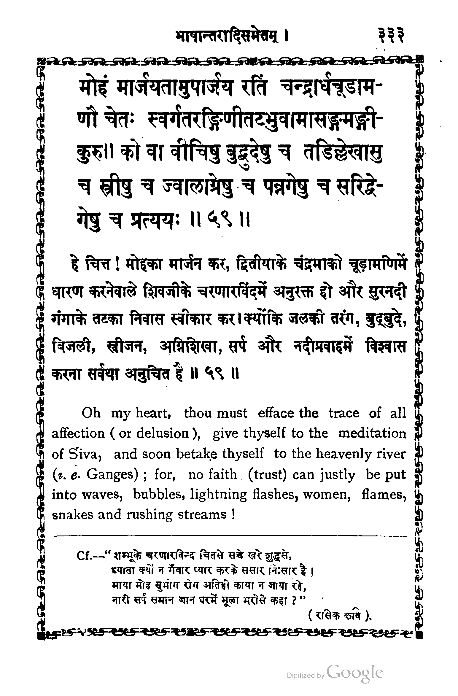 |
mohaṃ mārjaya tām upārjaya ratiṃ candrārdha-cūḍāmaṇau
cetaḥ svarga-taraṅgiṇī-taṭa-bhuvām āsaṅgam aṅgīkuru |
ko vā vīciṣu budbudeṣu ca taḍil-lekhāsu ca śrīṣu ca
jvālāgreṣu ca pannageṣu sarid-vegeṣu ca ca-pratyayaḥ || BharSt_3.64 ||
|
WIPE OUT DELUSION
Wipe out delusion, O my soul!
Seek peace in Shiva ever;
Dwell on the banks whereunder roll
Floods of the sacred river;
Who trusts in waves that break and crash,
In bonfires' flaming flakes,
In bubble or in lightning-flash,
In women, streams, or snakes?
|
|
|
|
cetaś cintaya mā ramāṃ sakṛd imām asthāyinīm āsthayā
bhūpāla-bhrukuṭī-kuṭī-viharaṇa-vyāpāra-paṇyāṅganām |
kanthā-kañcukinaḥ praviśya bhavana-dvārāṇi vārāṇasīrathyā-
paṅktiṣu pāṇi-pātra-patitāṃ bhikṣām apekṣāmahe || BharSt_3.65 ||
|
|
276 |
|
agre gītaṃ sarasa-kavayaḥ pārśvayor dākṣiṇātyāḥ
paścāl līlāvalaya-raṇitaṃ cāmara-grāhiṇīnām |
yady asty evaṃ kuru bhava-rasāsvādane lampaṭatvaṃ
no cec cetaḥ praviśa sahasā nirvikalpe samādhau || BharSt_3.66 ||
|
EVERYTHING OR NOTHING
Suppose you have the sweetest song before you,
The graceful poets of the south beside you,
Fan-girls behind who winsomely adore you
With tinkling rings; if nothing be denied you,
Then you may well be most extremely greedy
To taste each charming, mortal delectation;
But if you be in anything left needy,
Renounce it all and plunge in meditation.
|
|
277 |
|
viramata budhā yoṣit-saṅgāt sukhāt kṣaṇa-bhaṅgurāt
kuruta karuṇā-maitrī-prajñā-vadhū-jana-saṅgamam |
na khalu narake hārākrāntaṃ ghana-stana-maṇḍalaṃ
śaraṇam athavā śroṇī-bimbaṃ raṇan-maṇi-mekhalam || BharSt_2.67 ||
|
FORESIGHT
From loving girls, ye wise, refrain;
'Tis little pleasure, longer pain.
But love three females none the less,
Compassion, Wisdom, Friendliness.
For swelling breasts of lovely girls,
Trembling beneath their strings of pearls,
And hips with jingling girdles—well,
They do not help you much in hell.
|
|
278 |
|
mātar lakṣmi bhajasva kañcid aparaṃ mat-kāṅkṣiṇī mā sma bhūr
bhogeṣu spṛhayālavas tava vaśe kā niḥspṛhāṇām asi |
sadyaḥ syūta-palāśa-patra-puṭikā-pātraiḥ pavitrī-kṛtair
bhikṣā-vastubhir eva samprati vayaṃ vṛttiṃ samīhāmahe || BharSt_3.93 ||
|
|
279 |
|
yūyaṃ vayaṃ vayaṃ yūyam
ity āsīt matir āvayoḥ |
kiṃ jātam adhunā mitra
yūyaṃ yūyaṃ vayaṃ vayam ||
|
FRIENDSHIP'S END
Yes, you were I, and I was you,
So fond the love that linked us two;
Alas, my friend, for friendship's end!
Now I am I, and you are you.
|
|
280 |
|
bāle līlā-mukulitam amī mantharā dṛṣṭi-pātāḥ
kiṃ kṣipyante virama-virama vyartha eṣa śramas te |
sampraty anye vayam uparataṃ bālyam āsthā vanānte
kṣīṇo mohas tṛṇam iva jagaj-jālam ālokayāmaḥ || BharSt_2.62 ||
|
I LOVE THE WOODS
Girl, girl! What mean those tender glances
Like budding flowers in languid dances?
Stop, stop! Your art no more entrances.
I love the woods. My childish madness
Awakens memories of sadness.
The world? A straw brings equal gladness.
|
|
281 |
|
iyaṃ bālā māṃ praty anavaratam indīvara-dalaprabhā
cīraṃ cakṣuḥ kṣipati kim abhipretam anayā |
gato moho 'smākaṃ smara-śabara-bāṇa-vyatikarajvara-
jvālā śāntā tad api na varākī viramati || BharSt_2.63 ||
|
MY FOLLY'S DONE
Why should that girl still use her keen,
Coquettish eyes that steal the sheen
From lotus-flowers. What can she mean?
My folly's done. The fever-sting
Of love's soft arrow does not cling;
And yet she doesn't stop, poor thing!
|
|
282 |
|
ramyaṃ harmya-talaṃ na kiṃ vasataye śravyaṃ na geyādikaṃ
kiṃ vā prāṇa-samāsamāgama-sukhaṃ naivādhika-prītaye |
kintu bhrānta-pataṅga-kṣapavanavyālola-dīpāṅkura-
cchāyā-cañcalam ākalayya sakalaṃ santo vanāntaṃ gatāḥ || BharSt_3.80 ||
|
UNINTELLIGIBLE VIRTUE
Are palace-joys so incomplete?
Is song a despicable pleasure?
And is there anything so sweet
As clasping her you love and treasure?
Yet pious men account these things
As vain as flickering candlelight
'Neath dancing moths on troubled wings;
And to the woods they take their flight.
|
 |
283 |
|
kiṃ kandāḥ kandarebhyaḥ pralayam upagatā nirjharā vā giribhyaḥ
pradhvastā vā tarubhyaḥ sarasa-gala-bhṛto valkalinyaś ca śākhāḥ |
vīkṣyante yan mukhāni prasabham apagata-praśrayāṇāṃ khalānāṃ
duḥkhāpta-svalpa-vitta-smaya-pavana-vaśānartita-bhrū-latāni || BharSt_3.25 ||
|
THE BETTER PART-II
Have mountains lost their running streams,
The hillside nooks their roots,
The trees their bark-enveloped limbs
And all delicious fruits?
Why else should man disgrace himself
Before a loveless brow
That scowls in pride of scanty pelf,
With pain acquired but now?
|
|
284 |
|
gaṅgā-taraṅga-kaṇa-śīkara-śītalāni
vidyādharādhyuṣita-cāru-śilā-talāni |
sthānāni kiṃ himavataḥ pralayaṃ gatāni
yat sāvamāna-para-piṇḍa-ratā manuṣyāḥ || BharSt_3.24 ||
|
THE BETTER PART
Is there no splendid Himalayan height
Cooled by the spray from Ganges' holy springs,
With rocks where fairies now and then alight,
That men should fawn upon contemptuous kings?
|
|
285 |
|
yato meruḥ śrīmān nipatati yugāntāgni-valitaḥ
samudrāḥ śuṣyanti pracura-makara-grāha-nilayāḥ |
dharā gacchaty antaṃ dharaṇi-dhara-pādair api dhṛtā
śarīre kā vārtā karikalabha-karṇāgra-capale || BharSt_3.72 ||
|
THE LAST DAY
When the celestial mount shall totter, burning
In all-devouring flame,
When seas go dry, where crocodiles are turning
And sharks no man may tame,
When the compact earth itself shall tumble sheer,
Great mountains madly dance,
What of our bodies, quivering like the ear
Of baby elephants?
|
|
286 |
|
ekākī niḥspṛhaḥ śāntaḥ pāṇipātro digambaraḥ |
kadā śambho bhaviṣyāmi karma-nirmūlana-kṣamaḥ || BharSt_3.89 ||
|
HOW LONG, O LORD?
Alone, without desire, at rest,
In atmosphere of heaven drest,
My hand for spoon, when shall I be,
O Shiva, God! from karma free?
|
|
|
|
pāṇiṃ pātrayatāṃ nisarga-śucinā bhaikṣeṇa santuṣyatāṃ
yatra kvāpi niṣīdatāṃ bahu-tṛṇaṃ viśvaṃ muhuḥ paśyatām |
atyāge 'pi tanor akhaṇḍa-paramānandāvabodha-spṛśā
madhvā ko 'pi śiva-prasāda-sulabhaḥ sampatsyate yoginām || BharSt_3.90 ||
|
|
287 |
|
prāptāḥ śriyaḥ sakala-kāma-dudhās tataḥ kiṃ
nyastaṃ padaṃ śirasi vidviṣatāṃ tataḥ kim |
sampāditāḥ praṇayino vibhavais tataḥ kiṃ
kalpaṃ sthitās tanubhṛtāṃ tanavas tataḥ kim || BharSt_3.67 ||
|
WHAT THEN?-I
What if my life is fed
With all that seems most sweet?
What if my foeman's head
Is ground beneath my feet?
What if my wealth makes friends
Again and yet again?
What if my soul ascends
Through countless lives? What then?
|
|
288 |
|
jīrṇāḥ kanthā tataḥ kiṃ sitam amala-paṭaṃ paṭṭa-sūtraṃ tataḥ kiṃ
ekā bhāryā tataḥ kiṃ haya-kari-sugaṇair āvṛto vā tataḥ kim |
bhaktaṃ bhuktaṃ tataḥ kiṃ kadaśanam athavā vāsarānte tataḥ kiṃ
vyakta-jyotir na vāntarmathita-bhava-bhayaṃ vaibhavaṃ vā tataḥ kim || BharSt_3.- ||
|
WHAT THEN?-II
Old rags, or fine, white silk that flows and clings-
Why should I care?
Poor wife, or horses, elephants, and things-
What difference there?
Sweet rice, or wretched food when day is o'er-
Why care again?
God's light, or groping in the dark once more-
What then? What then?
|
|
289 |
|
bhaktir bhave maraṇa-janma-bhayaṃ hṛdi-sthaṃ
sneho na bandhuṣu na manmathajā vikārāḥ |
saṃsarja doṣa-rahitā vijayā vanāntā
vairāgyam asti kim itaḥ paramarthanīyam || BharSt_3.68 ||
|
RENUNCIATION
What does renunciation mean?
It means a lonely woodland scene
Remote from men and human sin,
From woes of love, from love of kin,
Free from the world, a life apart
That slays the tortures of the heart
As fear of death and fear of birth:
It means the best of heaven and earth.
|
|
290 |
|
tasmād anantam ajaraṃ paramaṃ vikāsi
tad brahma cintaya kim ebhir asad-vikalpaiḥ |
yasyānuṣaṅgiṇa ime bhuvanādhipatyabhogādayaḥ
kṛpaṇa-loka-matā bhavanti || BharSt_3.69 ||
|
|
291 |
|
pātālam āviśasi yāsi nabho vilaṅghya
diṅ-maṇḍalaṃ bhramasi mānasa cāpalena |
bhrāntyāpi jātu vimalaṃ katham ātmanīnaṃ
na brahma saṃsarasi virvṛtimm eṣi yena || BharSt_3.70 ||
|
ENTER INTO THY CLOSET
Although thou sink to hell, fly through the air,
Or flutter o'er the earth and never cease,
Think not, my soul, to find salvation there:
Remember God at home, who gives thee peace.
|
 |
292 |
|
rātriḥ saiva punaḥ sa eva divaso matvā mudhā jantavo
dhāvanty udyaminas tathaiva nibhṛta-prārabdha-tat-tat-kriyāḥ |
vyāpāraiḥ punar-ukta-bhūta-viṣayair itthaṃ vidhenāmunā
saṃsāreṇa kadarthitā vayam aho mohān na lajjāmahe || BharSt_3.44 ||
|
"Another night, another day"—
So thinks the foolish man,
Runs to the same old job again
As briskly as he can.
Frustrations that reiterate
How life is e'er the same,
Still leave him keen for stale delights.
Mad, mad! Is there no shame?
|
|
293 |
|
mahā-śayyā pṛthvī vipulam upadhānaṃ bhuja-latāṃ
vitānaṃ cākāśaṃ vyajanam anukūlo 'yam anilaḥ |
śarac-candro dīpo virati-vanitā-saṅga-muditaḥ
sukhī śāntaḥ śete munir atanu-bhūtir nṛpa iva || BharSt_3.94 ||
|
|
294 |
|
trailokyādhipatitvam eva virasaṃ yasmin mahāśāsane
tal labdhvāsana-vastra-māna-ghaṭane bhoge ratiṃ mā kṛthāḥ |
bhogaḥ ko 'pi sa eka eva paramo nityoditā jṛmbhane
yat-svādād virasā bhavanti visayās trailokya-rājyādayaḥ || BharSt_3.99*1 ||
|
JOY SUPREME
Forget society and clothes and food;
Seek thou that knowledge sure
Which makes imperial power that men think good,
Insipid and impure.
There is a higher joy, eternal, free—
Self-knowledge is its name—
Whose taste makes universal sovereignty
And such-like joys seem tame.
|
|
295 |
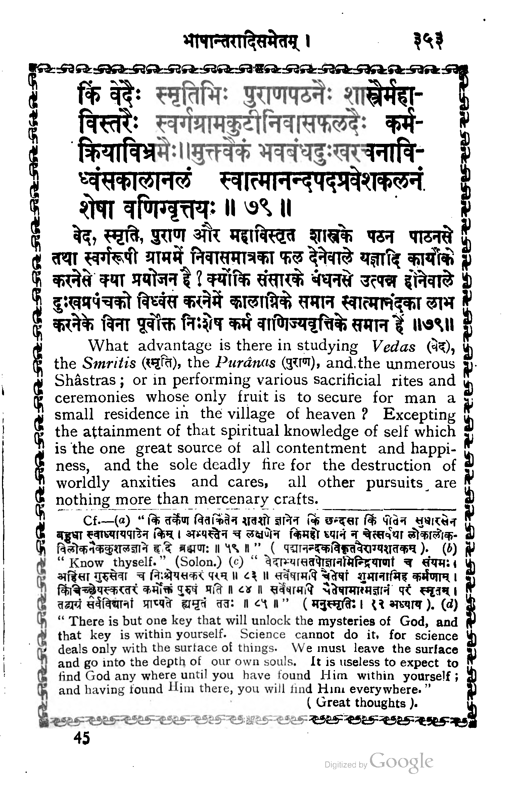 |
kiṃ vedaiḥ smṛtibhiḥ purāṇa-paṭhanaiḥ śāstrair mahā-vistaraiḥ
svarga-grāma-kuṭī-nivāsa-phaladaiḥ karma-kriyā-vibhramaiḥ |
muktvaikaṃ bhava-duḥkha-bhāra-racanā-vidhvaṃsa-kālānalaṃ
svātmānanda-pada-praveśa-kalanaṃ śesair vāṇig-vṛttibhiḥ || BharSt_3.71 ||
|
THE ONE THING NEEDFUL
Why should I study scripture, sacred lore,
Or any good, big book? Why get a store
Of pious actions, anxiously performed—
And win a humble tent in heaven, no more?
The knowledge of myself is all I need
To give me lasting joy, to burn the seed
Of the interminable pain of life—
Let pious peddlers show their wares and plead.
|
|
296 |
|
āyuḥ kallola-lolaṃ katipaya-divasa-sthāyinī yauvana-śrīr
arthāḥ saṅkalpa-kalpā ghana-samaya-taḍid-vibhramā bhoga-pūgāḥ |
kaṇṭhāśleṣopagūḍha tad api ca na ciraṃ yat priyābhaḥ praṇītaṃ
brahmaṇy āsakta-cittā bhavata bhavamayāmbhodhi-pāraṃ tarītum || BharSt_3.36 ||
|
|
297 |
|
brahmāṇḍaṃ maṇḍalī-mātraṃ kiṃ lobhāya manasvinaḥ |
śapharī-sphurtenābdhiḥ kṣubdho na khalu jāyate || BharSt_3.92 ||
|
THE LITTLENESS OF THE WORLD
Why should the truly wise man wish
To hold the world in fee?
'Tis but the leaping of a baby fish
Upon the boundless sea.
|
|
298 |
|
yadāsīd ajñānaṃ smara-timira-sañcāra-janitaṃ
tadā dṛṣṭa-nārī-mayam idam aśeṣaṃ jagad iti |
idānīm asmākaṃ paṭutara-vivekāñjana-juṣāṃ
samībhūtā dṛṣṭis tribhuvanam api brahma manute || BharSt_2.69 ||
|
TWO VIEWS OF LIFE
When ignorance my life entwined,
Love's ointment made me strangely blind-
I thought the world was made of womankind.
But clearer judgment than, of yore
The veil before my vision tore-
I knew that God is all the world and more.
|
|
299 |
|
ramyāś candra-marīcayas tṛṇavatī ramyā vanānta-sthalī
ramyaṃ sādhu-samāgamāgata-sukhaṃ kāvyeṣu ramyāḥ kathāḥ |
kopopāhita-bāṣpa-bindu-taralaṃ ramyaṃ priyāyā mukhaṃ
sarvaṃ ramyam anityatām upagate citte na kiñcit punaḥ || BharSt_3.79 ||
|
SWEET AND BITTER
Sweet are the moonbeams, sweet the grass-grown wood,
Sweet is the peaceful converse of the good,
The poet's song is sweet, the maiden's face
When angry tear-drops lend a sudden grace:
All would be sweet if human fate were fitter;
The thought of death turns all the sweet to bitter.
|
|
300 |
|
bhikṣāsī jana-madhya-saṅga-rahitaḥ svāyatta-ceṣṭaḥ sadā
hānā-dāna-virakta-mārga-nirataḥ kaścit tapasvī sthitaḥ |
rathyākīrṇa-viśīrṇa-jīrṇa-vasanaḥ samprāpta-kanthāsano
nirmāno nirahaṅkṛtiḥ śama-sukhābhogaika-baddha-spṛhaḥ || BharSt_3.95 ||
|
THE HERMIT
I seem to see a hermit good:
He has no pride, he begs his food;
From man-made laws his acts are free;
He seeks no man's society;
He has no care for common ways
Of giving, getting all his days;
He stitches up his garment ragged
With wayside tatters, torn and jagged;
No false conceit his fancy haunts—
Eternal peace is all he wants.
|
|
301 |
|
mātar medini tāta māruti sakhe tejaḥ subandho jala
bhrātar vyoma nibaddha eṣa bhavatām antyaḥ praṇāmāñjaliḥ |
yuṣmat-saṅga-vaśopajāta-sukṛta-sphāra-sphuran-nirmala-
jñānāpāsta-samasta-moha-mahimā līye para-brahmaṇi || BharSt_3.100 ||
|
A PRAYER
O father wind, friend light, and earth my mother!
O kinsman water, heaven's space my brother!
I bow, I pray: with you in union blest
May I be good, in brightest wisdom smother
The dark, and sink at last in God to rest.
|
|
302 |
|
yāvat svastham idaṃ śarīram arujaṃ yāvac ca dūre jarā
yāvac cendriya-śaktir apratihatā yāvat kṣayo nāyuṣaḥ |
ātma-śreyasi tāvad eva viduṣā kāryaḥ prayatno mahān
sandīpte bhavane tu kūpa-khananaṃ pratyudyamaḥ kīdṛśaḥ || BharSt_3.75 ||
|
IN THE DAYS OF THY YOUTH
While life is vigorous and bright,
While sickness comes not, nor decay,
While all your powers are at their height,
While yet old age is far away,
Then, wise man, let your thoughts be turning
To heaven's hopes and fears of hell;
For when the house is fired and burning,
It is too late to dig a well.
|
|
303 |
|
nābhyastā prativādi-vṛnda-damanī vidyā vinītocitā
khaḍgāgraiḥ kari-kumbha-pīṭha-dalanair nākaṃ na nītaṃ yaśaḥ |
kāntākomala-pallavādhara-rasaḥ pīto na candrodaye
tāruṇyaṃ gatam eva niṣphalam aho śūnyālaye dīpavat || BharSt_3.46 ||
|
A WASTED LIFE-II
I never learned to vanquish other men
In conference, with the just and fitting word;
I never made high heaven ring again,
Praising the elephant-hunter's sturdy sword;
I never tasted honey from the kind,
Soft lips of maids when moonlight scatters gloom:
My youth is gone and left no good behind,
A candle burning in an empty room.
|
|
304 |
|
jñānaṃ satāṃ māna-madādi-nāśaṃ
keṣāñcid etan mada-māna-kāraṇam |
sthānaṃ viviktaṃ yamināṃ vimuktaye
kāmāturāṇām api kāma-kāraṇam ||
|
CAUSE AND EFFECT
As knowledge in the just
Increases self-distrust;
In others, pride and lust—
Just so, the saint will find
When lonely, peace of mind;
Not so the lovesick kind.
|
|
305 |
|
kvacid vīṇāvādyaṃ kvacidapi ca hāheti ruditam |
kvacid vidvadgoṣṭhī kvacidapi surāmattakalahaḥ |
kvacid rāmā ramyā kvacidapi jarājarjaratanuḥ |
na jāne saṃsāraḥ kimamṛtamayaḥ kiṃ viṣamayaḥ ||
|
LIFE
Here is the sound of lutes, and there are screams and wailing;
Here winsome girls, there bodies old and failing;
Here scholars' talk, there drunkards' mad commotion—
Is life a nectared or a poisoned potion?
|
|
306 |
|
jīrṇā eva manorathāś ca hṛdaye yātaṃ ca tad yauvanaṃ
hantāṅgeṣu guṇāś bandhya-phalatāṃ yātā guṇajñair vinā |
kiṃ yuktaṃ sahasābhyupaiti balavān kālaḥ kṛtānto 'kṣamī
hā jñātaṃ madanāntakāṅghri-yugalaṃ muktvāsti nānyo gatiḥ || BharSt_3.83 ||
|
 |
307 |
|
tṛṣā śuṣyaty āsye pibati salilaṃ śīta-madhuraṃ
kṣudhārtaḥ śālyannaṃ kavalayati māṃsādi-kalitam |
pradīpte kāmāgnau sudṛḍhataram āliṅgati vadhūṃ
pratīkāraṃ vyādhaḥ sukham iti viparyasyati janaḥ || BharSt_3.19 ||
|
EPHEMERAL POTIONS
If mouths are dry with thirst,
Men think of water first;
If hungry, bolt their rice
With many a toothsome spice;
If love flames bright and brighter,
They clasp the women tighter:
They have the strangest notions;
They think ephemeral potions
Will heal the soul's commotions.
|
|
|
|
tuṅgaṃ veśma sutāḥ satām abhimatāḥ saṅkhyātigāḥ sampadaḥ
kalyāṇī dayitā vayaś ca navam ity ajñāna-mūḍho janaḥ |
matvā viśvam anaśvaraṃ niviśate saṃsāra-kārā-gṛhe
saṃdṛśya kṣaṇa-bhaṅguraṃ tad akhilaṃ dhanyas tu sannyasyati || BharSt_3.20 ||
|
|
|
|
abhimata-mahāmāna-granthi-prabheda-paṭīyasī
gurutara-guṇa-grāmābhoja-sphuṭojjvala-candrikā |
vipula-vilal-lajjā-vallī-vitāna-kuṭhārikā
jaṭhara-piṭharī duspureyaṃ karoti viḍambanam || BharSt_3.22 ||
|
|
308 |
|
snātvā gāṅgaiḥ payobhiḥ śuci-kusuma-phalair arcayitvā vibho tvā
dhyeye dhyānaṃ niveśya kṣiti-dhara-kuhara-grāva-paryaṅka-mūle |
ātmārāmaḥ phalāśī guru-vacana-ratas tvat-prasādāt smarāre
duḥkhaṃ mokṣye kadāhaṃ sama-kara-caraṇe puṃsi sevāsamuttham || BharSt_3.88 ||
|
|
309 |
|
śayyā śaila-śilā-gṛhaṃ giri-guhā vastraṃ taruṇāṃ tvacaḥ
sāraṅgāḥ suhṛdo nanu kṣiti-ruhāṃ vṛttiḥ phalaiḥ komalaiḥ |
yesāṃ nirjharam ambu-pānam ucitaṃ ratyai tu vidyāṅganā
manye te parameśvarāḥ śirasi yari baddho na sevāñjaliḥ || BharSt_3.100*1 ||
|
|
|
|
dhairyaṃ yasya pitā kṣamā ca jananī śāntiś ciraṃ gehinī
satyaṃ mitram idaṃ dayā ca bhaginī bhrātā manaḥ-saṃyamaḥ |
śayyā bhūmi-talaṃ diśo 'pi vasanaṃ jñānāmṛtaṃ bhojanaṃ
hy ete yasya kuṭumbino vada sakhe kasmād bhayaṃ yoginaḥ || BharSt_3.100*2 ||
|
|
310 |
|
satyām eva trilokī-sariti hara-śiraś cumbinīvac chaṭāyāṃ
sad-vṛttiṃ kalpayantyāṃ baṭa-viṭapa-bhavair valkalaiḥ sat-phalaiś ca |
ko 'yaṃ vidvān vipatti-jvara-janita-rujātīva-duḥkhāsikānāṃ
vaktraṃ vīkṣeta duḥsthe yadi hi na vibhṛyāt sve kuṭumbe 'nukampām || BharSt_3.61*1 ||
|
|
|
|
paribhramasi kiṃ mudhā kvacana citta viśrāmyatāṃ
svayaṃ bhavati yad yathā bhavati tat tathā nānyathā |
atītam ananusmarann api ca bhāvya-saṅkalpayannatarkita-
samāgamānubhavāmi bhoganāham || BharSt_3.62 ||
|
|
311 |
|
udyāneṣu vicitra-bhojana-vidhis tīvrātitīvraṃ tapaḥ
kaupīnāvaraṇaṃ suvastram amitaṃ bhikṣāṭanaṃ maṇḍanam |
āsannaṃ maraṇaṃ ca maṅgala-samaṃ yasyāṃ samutpadyate
tāṃ kāśīṃ parihṛtya hanta vibudhair anyatra kiṃ sthīyate || BharSt_3.- ||
|
|
312 |
|
nāyaṃ te samayo rahasyam adhunā nidrāti nātho yadi
sthitvā drakṣyati kupyati prabhur iti dvāreṣu yeṣāṃ vacaḥ |
cetas tān apahāya yāhi bhavanaṃ devasya viśveśitur
nirdauvārika-nirdayokty-aparuṣaṃ niḥsoma-śarma-pradam || BharSt_3.71*1 ||
|
TWO KINGS
Flee from the palace where they say:
The king is sleeping; go away-
He has no time for you today-
Or-he will see you if you stay-
He will be angry anyway.
Flee to another, greater king,
My soul, who rules each mortal thing,
Whose palace knows no bolt, no ring,
No porter's harsh, sarcastic fling,
No pain, no human suffering.
|
|
313 |
|
priyasakhi vipaddaṇḍaprāntaprapātaparaṃparā-
paricayacale cintācakre nidhāya vidhiḥ khalaḥ|
mṛdamiva balātpiṇḍīkṛtya pragalbhakulālavad-
bhramayati mano no jānīmaḥ kimatra vidhāsyati||
|
|
314 |
|
maheśvare vā jagatām adhīśvare
janārdane vā jagad-antarātmani |
na vastu-bheda-pratipattir asti me
tathāpi bhaktis taruṇendu-śekhare || BharSt_3.84 ||
|
|
315 |
|
kiṃ kandarpa karaṃ kadarthayasi re kodaṇḍa-ṭaṅkāritaṃ
re re kokila komalaṃ kala-ravaṃ kiṃ vā vṛthā jalpasi |
mugdhe snigdha-vidagdha-cāru-madhurair lolaiḥ kaṭākṣair alaṃ
cetaś cumbita-candra-cūḍa-caraṇa-dhyānāmṛtaṃ vartate || BharSt_2.64 ||
|
| 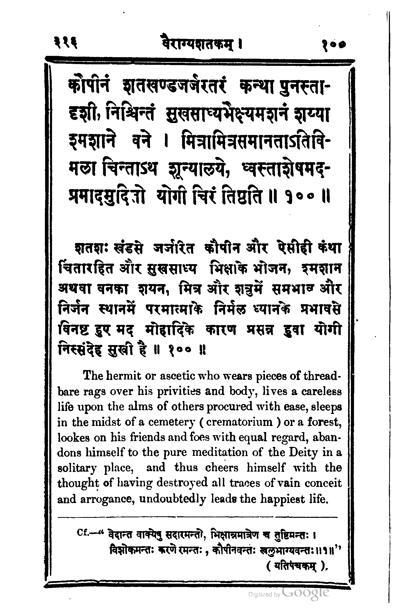 |
316 |
|
kaupīnaṃ śata-khaṇḍa-jarjarataraṃ kanthā punas tādṛśī
naiścintyaṃ nirapekṣa-bhaikṣyam aśanaṃ nidrā śmaśāne vane |
svātantryeṇa niraṅkuśaṃ viharaṇaṃ svāntaṃ praśāntaṃ sadā
sthairyaṃ yoga-mahotsave 'pi ca yadi trailokya-rājyena kim || BharSt_3.91 ||
|
|
317 |
|
bhogā bhaṅgura-vṛttayo bahuvidhās tair eva cāyaṃ bhavastat
kasyeha kṛte paribhramata re lokāḥ kṛtaṃ ceṣṭataiḥ |
āśā-pāśa-śatāpaśānti-viśadaṃ cetaḥ-samādhīyatāṃ
kāmotpatti-vaśāt svadhāmani yadi śraddeyam asmad-vacaḥ || BharSt_3.39 ||
|
|
318 |
|
dhanyānāṃ giri-kandareṣu vasatāṃ jyotiḥ paraṃ dhyāyatāmānandāśru-
jalaṃ pibanti śakunā niḥśaṅkam aṅkeśayāḥ |
asmākaṃ tu manorathoparacita-prāsāda-vāpī-taṭakrīḍā-
kānana-keli-kautuka-juṣām āyuḥ paraṃ kṣīyate || BharSt_3.14 ||
|
|
319 |
|
ākrāntaṃ maraṇena janma jarayā cātyujjvalaṃ yauvanaṃ
santoṣo dhana-lipsayā śama-mukhaṃ prauḍhāṅganā-vibhramaiḥ |
lokair matsaribhir guṇā vana-bhuvo vyālair nṛpā durjanair
asthairyeṇa vibhūtayo 'py apahatā grastaṃ na kiṃ kena vā || BharSt_3.32 ||
|
VEXATIONS-II
The fear of dying vexes birth;
Age vexes flashing youth ;
The carper vexes honest worth;
Irresolution, truth.
To vex our peace the women love;
Our joy, ambition's sting;
Rogues vex the court, and snakes the grove;
And something, everything.
|
|
320 |
|
ādhi-vyādhi-śatair janasya vividhair ārogyam unmūlyate
lakṣmīr yatra patanti tatra vivṛta-dvārā iva vyāpadaḥ |
jātaṃ jātam avaśyam āśu vivaśaṃ mṛtyuḥ karoty ātmasāt
tat kiṃ tena niraṅkuśena vidhinā yan nirmitaṃ susthiram || BharSt_3.33 ||
|
|
|
|
bhogās tuṅgataraṅga-bhaṅga-taralāḥ prāṇāḥ kṣaṇa-dhvaṃsinaḥ
stokāny eva dināni yauvana-sukhaṃ sphūrtiḥ priyāsu sthitā |
tat-saṃsāram asāram eva nikhilaṃ buddhvā budhā bodhakā
lokānugraha-peśalena manasā yatnaḥ samādhīyatām || BharSt_3.34 ||
|
|
321 |
|
kṛcchreṇāmedhya-madhye niyamita-tanubhiḥ sthīyate garbha-vāse
kāntā-viśleṣa-duḥkha-vyatikara-viṣamo yauvane copabhogaḥ |
vāmākṣīṇām avajñā-vihasita-vasatir vṛddha-bhāvo 'nyasādhuḥ
saṃsāre re manuṣyā vadata yadi sukhaṃ svalpam apy asti kiñcit || BharSt_3.37 ||
|
|
322 |
|
āyur varṣa-śataṃ nṝṇāṃ parimitaṃ rātrau tad-ardhaṃ gataṃ
tasyārdhasya parasya cārdham aparaṃ bālatva-vṛddhatvayoḥ |
śeṣaṃ vyādhi-viyoga-duḥkha-sahitaṃ sevādibhir nīyate
jīve vārita-raṅga-cañcalatare saukhyaṃ kutaḥ prāṇinām || BharSt_3.49 ||
|
|
323 |
|
brahma-jñāna-viveka-nirmala-dhiyaḥ kurvanty aho duṣkaraṃ
yan muñcanty upabhoga-bhāñjy api dhanāny ekāntato niḥspṛhāḥ |
samprātān na purā na samprati na ca prāptau dṛḍha-pratyayān
vāñchā-mātra-parigrahān api paraṃ tyaktuṃ na śaktā vayam || BharSt_3.13 ||
|
JOYOUS TREASURES
How hard a thing it is that they achieve
Whose hearts the thought of God keeps pure and bright,
Who for His sake earth's joyous treasures leave
Without a pang at losing such delight!
Those joyous treasures I could never get;
I cannot get them now; I am not sure
That I shall ever win to them; and yet
I cannot flout the thought, the hope, the lure.
|
|
324 |
 |
vyāghrīva tiṣṭhati jarā paritarjayantī
rogāś ca śatrava iva praharanti deham |
āyuḥ parisravanti bhinna-ghaṭā-divāmbho
lokas tathāpy ahitam ācaratīti citram || BharSt_3.38 ||
|
HEEDLESSNESS
Old age, an awful tigress, growls:
And shafts of sickness pierce the bowels;
Life's water trickles from its jar—
'Tis strange how thoughtless people are.
|
|
325 |
|
yadā yogābhyāsa-vyasana-kṛśayor ātma-manasoravicchinnā
maitrī sphurati kṛtinas tasya kim u taiḥ |
priyāṇām ālāpair adhara-madhubhir vaktra-vidhubhiḥ
saniśvāsāmodaiḥ sakuca-kalaśāśleṣa-surataiḥ || BharSt_2.68 ||
|
|
326 |
|
jātaḥ kūrmaḥ sa ekaḥ pṛthubhuvanabharāyāpitaṃ yena pṛṣṭhaṃ
ślāghyaṃ janma dhruvastha bhramati niyamitaṃ yatra tejasvicakram |
saṃjātavyarthapakṣāḥ parahitakaraṇe nopariṣṭānna cādho
brahmāṇḍodumbarāntarmaśakavadapare jantavo jātanaṣṭāḥ ||
|
|
327 |
|
unmīlat-trivalī-taraṅga-nilayā prottuṅga-pīna-stana-
dvandvenodgata-cakravāka-yugalā vaktrāmbujodbhāsinī |
kāntākāra-dharā nadīyam abhitaḥ krūrātra nāpekṣate
saṃsārārṇava-majjanaṃ yadi tadā dūreṇa santyajyatām || BharSt_2.49 ||
|
|
328 |
|
iha hi madhura-gītaṃ nṛtyam etad-raso 'yaṃ
sphurati parimalo 'sau sparśa eṣa stanānām |
iti hata-paramārthair indriyair bhrāmyamāṇaḥ
sva-hita-karaṇa-dhūrtaiḥ pañcabhir vañcito 'smi || BharSt_2.56 ||
|
THE FIVE ROBBERS
"Here are banquets, and singing sweet,
Perfumes, and glimpse of dancing feet,
And bosoms that on mine may bear."
Five rascal senses whisper this,
Lead me from virtue much amiss,
And cheat me of my highest bliss.
|
|
329 |
|
gātraṃ saṅkucitaṃ gatir vigalitā bhraṣṭā ca dantāvalir
dṛṣṭir nakṣyati vardhate vadhiratā vaktraṃ ca lālāyate |
vākyaṃ nādriyate ca bāndhava-jano bhāryā na śuśrūṣate
hā kaṣṭaṃ puruṣasya jīrṇa-vayasaḥ putro 'py amitrāyate || BharSt_3.73 ||
|
|
|
|
varṇaṃ sitaṃ śirasi vīkṣya śiroruhāṇāṃ
sthānaṃ jarā-paribhavasya tadā pumāṃsam |
āropitāṃsthi-śatakaṃ parihṛtya yānti
caṇḍāla-kūpam iva dūrataraṃ taruṇyaḥ || BharSt_3.74 ||
|
|
330 |
|
kṣaṇaṃ bālo bhūtvā kṣaṇam pai yuvā kāma-rasikaḥ
kṣaṇaṃ vittair hīnaḥ kṣaṇam api ca sampūrṇa-vibhavaḥ |
jarā-jīrṇair aṅgair naṭa iva balī-maṇḍita-tanūr
naraḥ saṃsārānte viśati yamadhānīya-vanikām || BharSt_3.50 ||
|
ALL THE WORLD'S A STAGE
Child for an hour, and lovesick youth an hour,
Beggar an hour, then fanned by riches' breath,
The wrinkled actor, Man, bereft of power,
Creeps tottering behind the curtain, Death.
|
|
331 |
|
praśānta-śāstrārtha-vicāra-cāpalaṃ
nivṛtta-nānā-rasa-kāvya-kautukam |
nirasta-niśśeṣa-vikalpa-viplavaṃ
prapattum anvicchati śūlinaṃ manaḥ ||
|
AFTER LIFE'S FITFUL FEVER
My mind no longer loves philosophy
No longer seeks delight in poetry,
Contemns the paths of doubt so often trod,
And yearns to be united with its God.
|
|
332 |
|
bhoge rogabhayaṃ kule cyuti-bhayaṃ vitte nṛpālād bhayaṃ
māne dhainya-bhayaṃ bale ripu-bhayaṃ rūpe jarāya bhayam |
śāstre vādibhayaṃ guṇe khala-bhayaṃ kāye kṛtāntād bhayaṃ
sarvaṃ vastu bhayānvitaṃ bhuvi nṝṇāṃ vairāgyam evābhayam || BharSt_3.31 ||
|